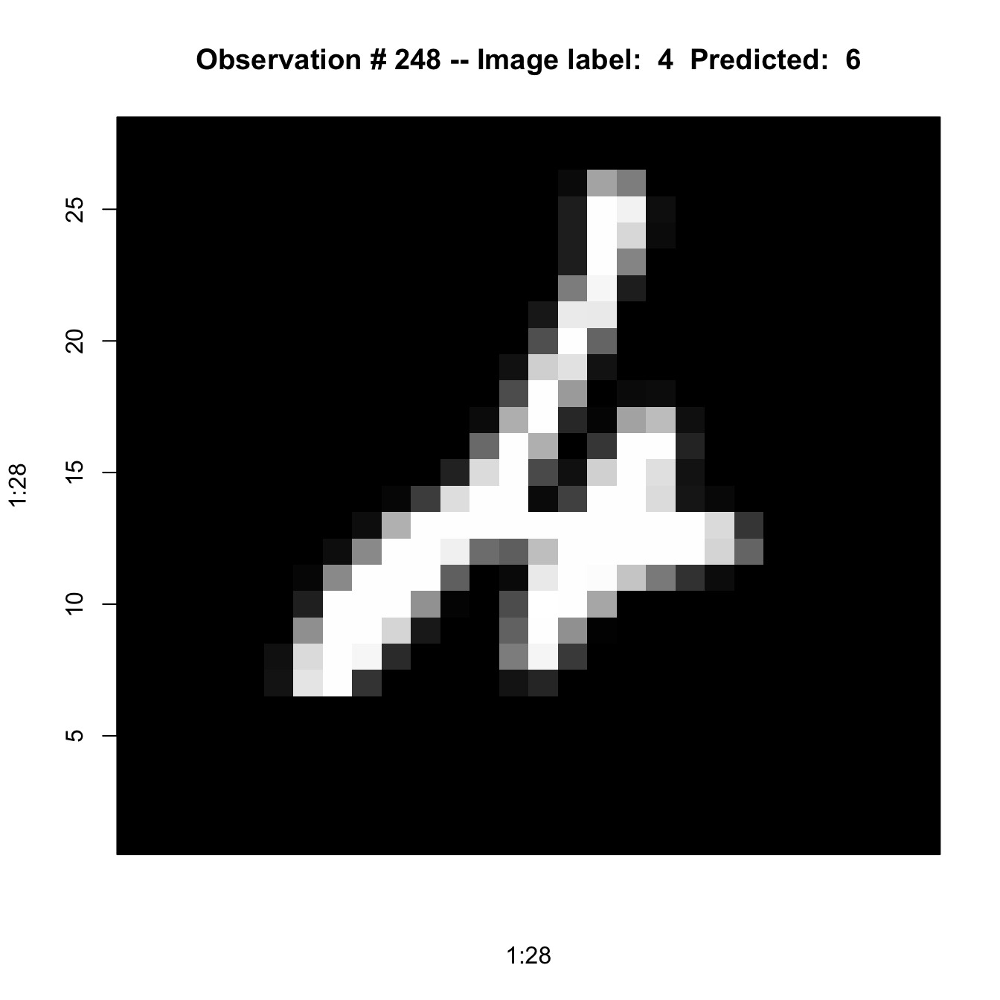

install.packages("keras")
reticulate::install_miniconda()
keras::install_keras(method="conda", python_version="3.11")34 Neural Networks in R (with Keras)
34.1 Introduction
Working with neural networks in R can be a bit challenging. For one, there are many packages available that can train ANNs, see Table 34.1 for some examples. The packages vary greatly in capabilities and syntax.
Several frameworks for ANNs and deep learning exist. TensorFlow, Microsoft CNTK, PyTorch, and Theano are among the most important ones.
R packages for neural network analysis.
| Package | Notes |
|---|---|
nnet |
Feed-forward neural networks with a single hidden layer, and for multinomial log-linear models |
neuralnet |
Training of neural networks using backpropagation |
tensorflow |
Interface to TensorFlow, a free and open-source software library for machine learning and artificial intelligence |
darch |
Deep architectures and Restricted Boltzmann Machines |
deepnet |
Deep learning toolkit |
deepr |
Streamlines training, tuning, and predicting for deep learning based on darch and deepnet |
rnn |
Recurrent Neural Networks (RNN) |
torch |
Tensors and neural networks with GPU acceleration; similar to Pytorch |
keras |
Interface to the Python deep learning library Keras |
kerasR |
Interface to the Python deep learning library Keras |
Keras has emerged as an important API (Application Programming Interface) for deep learning. It provides a consistent interface on top of JAX, TensorFlow, or PyTorch. While TensorFlow is very powerful, the learning curve can be steep and you tend to write a lot of code. On the other hand, you have complete control over the types of models you build and train with TensorFlow. That makes Keras so relevant: you can tap into the capabilities of TensorFlow with a simpler API.
The drawback of using Keras and other deep learning frameworks in R is that they are written in Python. Tools from the modern machine learning toolbox tend to be written in Python. The keras package in R is not an implementation of Keras in R, it is an R-based API that calls into the Keras Python code. And that code calls into Tensorflow, or whatever deep learning framework Keras is running on.
To use keras in R, you thus need to manage a Python distribution, manage Python packages, and deal with the idiosyncrasies of function interfaces between programming languages. For example, you will have to deal with Python error messages bubbling up to the R session. Fortunately, some of the headaches of running Python from R are mitigated by the reticulate package which provides the R interface to Python.
Tip
The KerasR package is not the same as the keras package in R. Both packages provide an API for Keras and the API of KerasR is closer to the Python syntax. That makes switching between R and Python for deep learning easier. However, the keras package supports piping of operations similar to the dplyr package. I find working with keras simple because neural networks can be build by piping layer definitions. After all, that is how neural networks work: the output of one layer is input to the next layer.
We will be using the keras package in R. It uses the TensorFlow framework under the cover by default.
34.2 Running Keras in R
Installation
As mentioned earlier, running keras requires a Python distribution. In addition, you need to install the Keras and TensorFlow Python libraries. The preferred Python installation in this case is conda-based. Good instructions for installing TensorFlow, Keras, and the Python runtime at once—depending on whether you have a prior conda installation—can be found here.
In the situation without prior conda installation, these commands will install everything you need (do this once in your environment):
Then, in an R session that runs keras do the following:
library(keras)
reticulate::use_condaenv(condaenv = "r-tensorflow")The "r-tensorflow" conda environment was installed during the previous step.
Keras Basics
Training a neural network with keras involves three steps:
Defining the network
Setting up the optimization
Fitting the model
Not until the third step does the algorithm get in contact with actual data. However, we need to know some things about the data in order to define the network in step 1: the dimensions of the input and output.
Defining the network
The most convenient way of specifying a multi layer neural network is by adding layers sequentially, from the input layer to the output layer. These starts with a call to keras_model_sequential(). Suppose we want to predict a continuous response (regression application) based on inputs \(x_1, \cdots, x_{20}\) with one hidden layer and dropout regularization.
The following statements define the model sequentially:
firstANN <- keras_model_sequential() %>%
layer_dense(units =50,
activation ="relu",
input_shape=20
) %>%
layer_dropout(rate=0.4) %>%
layer_dense(units=1,
name ="Output") layer_dense() adds a fully connected layer to the networks, the units= option specifies the number of neurons in the layer. The input_shape= option is specified only for the first layer in the network. In summary, the hidden layer receives 20 inputs and has 50 output units (neurons) and ReLU activation. The output from the hidden layer is passed on (piped) to a dropout layer with a dropout rate of \(\phi = 0.4\). The result of the dropout layer is passed on to another fully connected layer with a single neuron. This is the output layer of the network. In other words, the last layer in the sequence is automatically the output layer. Since we are in a regression context to predict a numeric target variable, there is only one output unit in the final layer. If this was a classification problem with \(5\) categories, the last layer would have 5 units.
You can assign a name to each layer with the name= option, this makes it easier to identify the layers in output. If you do not specify a name, Keras will assign a name that combines a description of the layer type with a numerical index (not always). The numeric indices can be confusing because they depend on counters internal to the Python code. Assigning an explicit name is recommended practice.
The activation= option specifies the activation function \(\sigma()\) for the hidden layers and the output function \(g()\) for the output layer. The default is the identity (“linear”) activation, \(\sigma(x) = x\). This default is appropriate for the output layer in a regression application. For the hidden layer we choose the ReLU activation.
To see the list of activation functions supported by keras (Keras), type
?keras::actiat the console prompt.
The basic neural network is now defined and we can find out how many parameters it entails.
summary(firstANN)Model: "sequential"
________________________________________________________________________________
Layer (type) Output Shape Param #
================================================================================
dense (Dense) (None, 50) 1050
dropout (Dropout) (None, 50) 0
Output (Dense) (None, 1) 51
================================================================================
Total params: 1101 (4.30 KB)
Trainable params: 1101 (4.30 KB)
Non-trainable params: 0 (0.00 Byte)
________________________________________________________________________________With 20 inputs and 50 neurons, the first layer has 50 x 21 = 1050 parameters (20 slopes and an intercept for each output neuron). The dropout layer does not add any parameters to the estimation, it chooses output neurons of the previous layer at random and sets their activation to zero. The 50 neurons (some with activation set randomly to zero) are the input to the final layer, adding fifty weights (slopes) and one bias (intercept). The total number of parameters of this neural network is 1,101.
Setting up the optimization
The second step in training a model in Keras is to specify the particulars of the optimization with the keras::compile() function (which actually calls keras::compile.keras.engine.training.Model). Typical specifications include the loss functions, the type of optimization algorithm, and the metrics evaluated by the model during training.
The following function call uses the RMSProp algorithm with mean-squared error loss function to estimate the parameters of the network. During training, the mean absolute error is also monitored in addition to the mean squared error.
firstANN %>% compile(loss="mse", # see keras$losses$
optimizer=optimizer_rmsprop(), # see keras$optimizers$
metrics=list("mean_absolute_error") # see keras$metrics$
)Depending on your environment, not all optimization algorithms are supported.
Fitting the model
The last step in training the network is to connect the defined and compiled model with training—and possibly test—data.
For this example we use the Hitters data from the ISLR2 package. This is a data set with 322 observations of major league baseball players from the 1986 and 1987 seasons. The following code removes observations with missing values from the data frame, defines a vector of ids for the test data (1/3 of the observations) and computes a scaled and centered model matrix using all 20 input variables.
library(ISLR2)
Gitters <- na.omit(Hitters)
n <- nrow(Gitters)
set.seed(13)
ntest <- trunc(n / 3)
testid <- sample(1:n, ntest)
x <- scale(model.matrix(Salary ~ . - 1, data = Gitters))
y <- Gitters$SalaryNote that the model contains several factors (League, Division, NewLeague) whose levels are encoded as binary variables in the model matrix. One could exclude those from scaling and centering as they already are in the proper range. In a regression model you would not want to scale these variables to preserve the interpretation of their coefficients. In a neural network interpretation of the model coefficients is not important and we include all columns of the model matrix in the scaling operation.
The following code fits the model to the training data (-testid) using 20 epochs and a minibatch size of 32. That means the gradient is computed based on 32 randomly chosen observations in each step of the stochastic gradient descent algorithm. Since there are 176 training observations it takes \(176/32=5.5\) SGD steps to process all \(n\) observations. This is known as an epoch and is akin to the concept of an iteration in numerical optimization: a full pass through the data. The fundamental difference between an epoch and an iteration lies in the fact that updates of the parameters occur after each gradient computation. In a full iteration, there is one update after the pass through the entire data. In SGD with minibatch, there are multiple updates of the parameters, one for each minibatch.
Running 200 epochs with a batch size of 32 and a training set size of 176 results in 200 * 5.5 = 1,100 gradient evaluations.
The validation_data= option lists the test data for the training. The objective function and metrics specified in the compile command earlier are computed at each epoch for the training and the test data if the latter is specified. If you do not have a validation data set, you can specify validation_split= and request that a fraction of the training data is held back for validation.
history <- firstANN %>%
fit(x[-testid, ],
y[-testid ],
epochs=200,
batch_size=32,
validation_data=list(x[testid, ], y[testid])
)Epoch 1/200
6/6 - 0s - loss: 457226.5000 - mean_absolute_error: 534.1255 - val_loss: 556257.5000 - val_mean_absolute_error: 539.9450 - 262ms/epoch - 44ms/step
Epoch 2/200
6/6 - 0s - loss: 456829.0000 - mean_absolute_error: 533.7659 - val_loss: 555917.1250 - val_mean_absolute_error: 539.7238 - 19ms/epoch - 3ms/step
Epoch 3/200
6/6 - 0s - loss: 456665.8750 - mean_absolute_error: 533.5555 - val_loss: 555560.7500 - val_mean_absolute_error: 539.5172 - 12ms/epoch - 2ms/step
Epoch 4/200
6/6 - 0s - loss: 456363.9688 - mean_absolute_error: 533.4012 - val_loss: 555264.1250 - val_mean_absolute_error: 539.3166 - 11ms/epoch - 2ms/step
Epoch 5/200
6/6 - 0s - loss: 456023.2812 - mean_absolute_error: 533.1308 - val_loss: 554954.3750 - val_mean_absolute_error: 539.1245 - 11ms/epoch - 2ms/step
Epoch 6/200
6/6 - 0s - loss: 455747.5312 - mean_absolute_error: 532.9415 - val_loss: 554621.0625 - val_mean_absolute_error: 538.9243 - 11ms/epoch - 2ms/step
Epoch 7/200
6/6 - 0s - loss: 455530.1875 - mean_absolute_error: 532.8084 - val_loss: 554304.0625 - val_mean_absolute_error: 538.7281 - 11ms/epoch - 2ms/step
Epoch 8/200
6/6 - 0s - loss: 455194.5000 - mean_absolute_error: 532.5351 - val_loss: 553976.0000 - val_mean_absolute_error: 538.5270 - 11ms/epoch - 2ms/step
Epoch 9/200
6/6 - 0s - loss: 454896.3750 - mean_absolute_error: 532.3261 - val_loss: 553649.3750 - val_mean_absolute_error: 538.3268 - 11ms/epoch - 2ms/step
Epoch 10/200
6/6 - 0s - loss: 454675.3750 - mean_absolute_error: 532.1889 - val_loss: 553316.8750 - val_mean_absolute_error: 538.1285 - 11ms/epoch - 2ms/step
Epoch 11/200
6/6 - 0s - loss: 454350.8125 - mean_absolute_error: 531.9301 - val_loss: 552977.9375 - val_mean_absolute_error: 537.9238 - 11ms/epoch - 2ms/step
Epoch 12/200
6/6 - 0s - loss: 453972.4688 - mean_absolute_error: 531.6926 - val_loss: 552602.0625 - val_mean_absolute_error: 537.7073 - 11ms/epoch - 2ms/step
Epoch 13/200
6/6 - 0s - loss: 453917.8125 - mean_absolute_error: 531.5341 - val_loss: 552234.8750 - val_mean_absolute_error: 537.4938 - 11ms/epoch - 2ms/step
Epoch 14/200
6/6 - 0s - loss: 453440.6250 - mean_absolute_error: 531.2445 - val_loss: 551832.5000 - val_mean_absolute_error: 537.2760 - 12ms/epoch - 2ms/step
Epoch 15/200
6/6 - 0s - loss: 453230.5000 - mean_absolute_error: 531.0634 - val_loss: 551469.0625 - val_mean_absolute_error: 537.0679 - 11ms/epoch - 2ms/step
Epoch 16/200
6/6 - 0s - loss: 452571.3125 - mean_absolute_error: 530.6755 - val_loss: 551019.9375 - val_mean_absolute_error: 536.8266 - 10ms/epoch - 2ms/step
Epoch 17/200
6/6 - 0s - loss: 452490.8125 - mean_absolute_error: 530.5662 - val_loss: 550610.6250 - val_mean_absolute_error: 536.5983 - 11ms/epoch - 2ms/step
Epoch 18/200
6/6 - 0s - loss: 452043.0000 - mean_absolute_error: 530.3212 - val_loss: 550216.6250 - val_mean_absolute_error: 536.3717 - 11ms/epoch - 2ms/step
Epoch 19/200
6/6 - 0s - loss: 451629.8125 - mean_absolute_error: 530.0510 - val_loss: 549751.2500 - val_mean_absolute_error: 536.1259 - 15ms/epoch - 2ms/step
Epoch 20/200
6/6 - 0s - loss: 451473.7812 - mean_absolute_error: 529.9976 - val_loss: 549326.6875 - val_mean_absolute_error: 535.8980 - 11ms/epoch - 2ms/step
Epoch 21/200
6/6 - 0s - loss: 451029.0938 - mean_absolute_error: 529.6041 - val_loss: 548861.6250 - val_mean_absolute_error: 535.6447 - 10ms/epoch - 2ms/step
Epoch 22/200
6/6 - 0s - loss: 450566.2812 - mean_absolute_error: 529.3917 - val_loss: 548394.6875 - val_mean_absolute_error: 535.3982 - 10ms/epoch - 2ms/step
Epoch 23/200
6/6 - 0s - loss: 450234.4688 - mean_absolute_error: 529.1412 - val_loss: 547886.2500 - val_mean_absolute_error: 535.1297 - 10ms/epoch - 2ms/step
Epoch 24/200
6/6 - 0s - loss: 449608.8750 - mean_absolute_error: 528.6975 - val_loss: 547349.8125 - val_mean_absolute_error: 534.8422 - 10ms/epoch - 2ms/step
Epoch 25/200
6/6 - 0s - loss: 449614.0000 - mean_absolute_error: 528.7200 - val_loss: 546820.5000 - val_mean_absolute_error: 534.5720 - 10ms/epoch - 2ms/step
Epoch 26/200
6/6 - 0s - loss: 448963.1875 - mean_absolute_error: 528.2265 - val_loss: 546313.6250 - val_mean_absolute_error: 534.2988 - 11ms/epoch - 2ms/step
Epoch 27/200
6/6 - 0s - loss: 448772.3125 - mean_absolute_error: 528.0593 - val_loss: 545758.9375 - val_mean_absolute_error: 534.0021 - 10ms/epoch - 2ms/step
Epoch 28/200
6/6 - 0s - loss: 448512.9688 - mean_absolute_error: 527.9475 - val_loss: 545205.1250 - val_mean_absolute_error: 533.7067 - 10ms/epoch - 2ms/step
Epoch 29/200
6/6 - 0s - loss: 447838.8125 - mean_absolute_error: 527.3890 - val_loss: 544609.6250 - val_mean_absolute_error: 533.4021 - 10ms/epoch - 2ms/step
Epoch 30/200
6/6 - 0s - loss: 447022.6250 - mean_absolute_error: 526.8799 - val_loss: 543988.3750 - val_mean_absolute_error: 533.0853 - 10ms/epoch - 2ms/step
Epoch 31/200
6/6 - 0s - loss: 446403.9062 - mean_absolute_error: 526.6075 - val_loss: 543347.5000 - val_mean_absolute_error: 532.7555 - 10ms/epoch - 2ms/step
Epoch 32/200
6/6 - 0s - loss: 446220.6250 - mean_absolute_error: 526.3902 - val_loss: 542730.7500 - val_mean_absolute_error: 532.4386 - 10ms/epoch - 2ms/step
Epoch 33/200
6/6 - 0s - loss: 445926.4062 - mean_absolute_error: 526.0673 - val_loss: 542067.2500 - val_mean_absolute_error: 532.0996 - 10ms/epoch - 2ms/step
Epoch 34/200
6/6 - 0s - loss: 444910.4688 - mean_absolute_error: 525.5363 - val_loss: 541401.5625 - val_mean_absolute_error: 531.7633 - 10ms/epoch - 2ms/step
Epoch 35/200
6/6 - 0s - loss: 443905.3125 - mean_absolute_error: 524.9869 - val_loss: 540665.3125 - val_mean_absolute_error: 531.3882 - 10ms/epoch - 2ms/step
Epoch 36/200
6/6 - 0s - loss: 443754.1875 - mean_absolute_error: 524.8337 - val_loss: 540009.1250 - val_mean_absolute_error: 531.0560 - 10ms/epoch - 2ms/step
Epoch 37/200
6/6 - 0s - loss: 442995.6875 - mean_absolute_error: 524.4160 - val_loss: 539281.0000 - val_mean_absolute_error: 530.6913 - 10ms/epoch - 2ms/step
Epoch 38/200
6/6 - 0s - loss: 442959.4688 - mean_absolute_error: 524.3544 - val_loss: 538561.6875 - val_mean_absolute_error: 530.3264 - 10ms/epoch - 2ms/step
Epoch 39/200
6/6 - 0s - loss: 441805.8750 - mean_absolute_error: 523.5726 - val_loss: 537751.1875 - val_mean_absolute_error: 529.9141 - 10ms/epoch - 2ms/step
Epoch 40/200
6/6 - 0s - loss: 441840.0312 - mean_absolute_error: 523.7081 - val_loss: 537022.1875 - val_mean_absolute_error: 529.5456 - 10ms/epoch - 2ms/step
Epoch 41/200
6/6 - 0s - loss: 440453.5312 - mean_absolute_error: 522.7245 - val_loss: 536223.2500 - val_mean_absolute_error: 529.1417 - 9ms/epoch - 2ms/step
Epoch 42/200
6/6 - 0s - loss: 439421.6875 - mean_absolute_error: 522.2501 - val_loss: 535391.3750 - val_mean_absolute_error: 528.7123 - 10ms/epoch - 2ms/step
Epoch 43/200
6/6 - 0s - loss: 439075.8125 - mean_absolute_error: 522.0516 - val_loss: 534611.8750 - val_mean_absolute_error: 528.3134 - 10ms/epoch - 2ms/step
Epoch 44/200
6/6 - 0s - loss: 438841.0312 - mean_absolute_error: 521.4055 - val_loss: 533805.3750 - val_mean_absolute_error: 527.8994 - 10ms/epoch - 2ms/step
Epoch 45/200
6/6 - 0s - loss: 437763.2812 - mean_absolute_error: 520.6949 - val_loss: 532871.0625 - val_mean_absolute_error: 527.4319 - 10ms/epoch - 2ms/step
Epoch 46/200
6/6 - 0s - loss: 437730.9688 - mean_absolute_error: 520.7711 - val_loss: 532095.0000 - val_mean_absolute_error: 527.0323 - 10ms/epoch - 2ms/step
Epoch 47/200
6/6 - 0s - loss: 437420.9062 - mean_absolute_error: 520.5466 - val_loss: 531230.6875 - val_mean_absolute_error: 526.5911 - 10ms/epoch - 2ms/step
Epoch 48/200
6/6 - 0s - loss: 436024.4688 - mean_absolute_error: 519.8127 - val_loss: 530360.8125 - val_mean_absolute_error: 526.1466 - 10ms/epoch - 2ms/step
Epoch 49/200
6/6 - 0s - loss: 435208.9688 - mean_absolute_error: 519.1470 - val_loss: 529479.3125 - val_mean_absolute_error: 525.6829 - 9ms/epoch - 2ms/step
Epoch 50/200
6/6 - 0s - loss: 434032.1875 - mean_absolute_error: 518.8517 - val_loss: 528561.3750 - val_mean_absolute_error: 525.2083 - 10ms/epoch - 2ms/step
Epoch 51/200
6/6 - 0s - loss: 434661.5312 - mean_absolute_error: 518.8428 - val_loss: 527636.9375 - val_mean_absolute_error: 524.7247 - 10ms/epoch - 2ms/step
Epoch 52/200
6/6 - 0s - loss: 432105.7812 - mean_absolute_error: 517.4421 - val_loss: 526646.6250 - val_mean_absolute_error: 524.2281 - 10ms/epoch - 2ms/step
Epoch 53/200
6/6 - 0s - loss: 432910.7188 - mean_absolute_error: 517.6484 - val_loss: 525692.2500 - val_mean_absolute_error: 523.7370 - 10ms/epoch - 2ms/step
Epoch 54/200
6/6 - 0s - loss: 432212.3125 - mean_absolute_error: 517.4644 - val_loss: 524712.1875 - val_mean_absolute_error: 523.2309 - 11ms/epoch - 2ms/step
Epoch 55/200
6/6 - 0s - loss: 431844.6250 - mean_absolute_error: 517.0085 - val_loss: 523678.5312 - val_mean_absolute_error: 522.6917 - 66ms/epoch - 11ms/step
Epoch 56/200
6/6 - 0s - loss: 430794.1875 - mean_absolute_error: 516.5258 - val_loss: 522630.2188 - val_mean_absolute_error: 522.1656 - 10ms/epoch - 2ms/step
Epoch 57/200
6/6 - 0s - loss: 429695.5312 - mean_absolute_error: 515.3232 - val_loss: 521612.6875 - val_mean_absolute_error: 521.6364 - 10ms/epoch - 2ms/step
Epoch 58/200
6/6 - 0s - loss: 428014.1250 - mean_absolute_error: 514.6863 - val_loss: 520527.2500 - val_mean_absolute_error: 521.0721 - 10ms/epoch - 2ms/step
Epoch 59/200
6/6 - 0s - loss: 426232.4688 - mean_absolute_error: 513.3658 - val_loss: 519386.9062 - val_mean_absolute_error: 520.4838 - 10ms/epoch - 2ms/step
Epoch 60/200
6/6 - 0s - loss: 425771.2188 - mean_absolute_error: 512.8124 - val_loss: 518256.0000 - val_mean_absolute_error: 519.8989 - 10ms/epoch - 2ms/step
Epoch 61/200
6/6 - 0s - loss: 426407.8750 - mean_absolute_error: 513.2845 - val_loss: 517169.1875 - val_mean_absolute_error: 519.3298 - 10ms/epoch - 2ms/step
Epoch 62/200
6/6 - 0s - loss: 425088.9062 - mean_absolute_error: 512.4056 - val_loss: 515997.5312 - val_mean_absolute_error: 518.7227 - 10ms/epoch - 2ms/step
Epoch 63/200
6/6 - 0s - loss: 423939.5000 - mean_absolute_error: 511.7202 - val_loss: 514838.0312 - val_mean_absolute_error: 518.1161 - 10ms/epoch - 2ms/step
Epoch 64/200
6/6 - 0s - loss: 423494.6250 - mean_absolute_error: 511.3246 - val_loss: 513611.7188 - val_mean_absolute_error: 517.4736 - 10ms/epoch - 2ms/step
Epoch 65/200
6/6 - 0s - loss: 423379.8750 - mean_absolute_error: 511.1146 - val_loss: 512587.1875 - val_mean_absolute_error: 516.9299 - 10ms/epoch - 2ms/step
Epoch 66/200
6/6 - 0s - loss: 422312.9062 - mean_absolute_error: 510.4146 - val_loss: 511437.6875 - val_mean_absolute_error: 516.3357 - 10ms/epoch - 2ms/step
Epoch 67/200
6/6 - 0s - loss: 420856.6250 - mean_absolute_error: 509.6540 - val_loss: 510287.0000 - val_mean_absolute_error: 515.7137 - 10ms/epoch - 2ms/step
Epoch 68/200
6/6 - 0s - loss: 419187.0938 - mean_absolute_error: 508.0835 - val_loss: 509053.5625 - val_mean_absolute_error: 515.0785 - 10ms/epoch - 2ms/step
Epoch 69/200
6/6 - 0s - loss: 417283.5000 - mean_absolute_error: 507.2830 - val_loss: 507750.5312 - val_mean_absolute_error: 514.3986 - 10ms/epoch - 2ms/step
Epoch 70/200
6/6 - 0s - loss: 416602.4062 - mean_absolute_error: 507.4673 - val_loss: 506432.2812 - val_mean_absolute_error: 513.7185 - 10ms/epoch - 2ms/step
Epoch 71/200
6/6 - 0s - loss: 416804.4062 - mean_absolute_error: 506.6473 - val_loss: 505174.0625 - val_mean_absolute_error: 513.0511 - 10ms/epoch - 2ms/step
Epoch 72/200
6/6 - 0s - loss: 415237.1250 - mean_absolute_error: 506.2351 - val_loss: 503900.8750 - val_mean_absolute_error: 512.3788 - 12ms/epoch - 2ms/step
Epoch 73/200
6/6 - 0s - loss: 415128.8750 - mean_absolute_error: 505.5977 - val_loss: 502703.4062 - val_mean_absolute_error: 511.7328 - 10ms/epoch - 2ms/step
Epoch 74/200
6/6 - 0s - loss: 413398.0312 - mean_absolute_error: 504.8196 - val_loss: 501404.7812 - val_mean_absolute_error: 511.0388 - 10ms/epoch - 2ms/step
Epoch 75/200
6/6 - 0s - loss: 411401.0938 - mean_absolute_error: 503.3736 - val_loss: 500104.3750 - val_mean_absolute_error: 510.3491 - 10ms/epoch - 2ms/step
Epoch 76/200
6/6 - 0s - loss: 409668.5938 - mean_absolute_error: 502.3092 - val_loss: 498820.1250 - val_mean_absolute_error: 509.6522 - 9ms/epoch - 2ms/step
Epoch 77/200
6/6 - 0s - loss: 409229.4688 - mean_absolute_error: 501.8419 - val_loss: 497426.0312 - val_mean_absolute_error: 508.9146 - 10ms/epoch - 2ms/step
Epoch 78/200
6/6 - 0s - loss: 409956.5000 - mean_absolute_error: 502.0013 - val_loss: 495982.0312 - val_mean_absolute_error: 508.1630 - 9ms/epoch - 2ms/step
Epoch 79/200
6/6 - 0s - loss: 406615.4688 - mean_absolute_error: 500.1616 - val_loss: 494652.5938 - val_mean_absolute_error: 507.4379 - 9ms/epoch - 2ms/step
Epoch 80/200
6/6 - 0s - loss: 409669.8125 - mean_absolute_error: 501.6740 - val_loss: 493388.1250 - val_mean_absolute_error: 506.7522 - 10ms/epoch - 2ms/step
Epoch 81/200
6/6 - 0s - loss: 405495.3750 - mean_absolute_error: 499.2418 - val_loss: 491924.6875 - val_mean_absolute_error: 505.9712 - 10ms/epoch - 2ms/step
Epoch 82/200
6/6 - 0s - loss: 406426.0312 - mean_absolute_error: 499.1783 - val_loss: 490581.9375 - val_mean_absolute_error: 505.2330 - 10ms/epoch - 2ms/step
Epoch 83/200
6/6 - 0s - loss: 405540.1875 - mean_absolute_error: 498.3910 - val_loss: 489193.8750 - val_mean_absolute_error: 504.4659 - 10ms/epoch - 2ms/step
Epoch 84/200
6/6 - 0s - loss: 404378.7188 - mean_absolute_error: 498.0718 - val_loss: 487703.4375 - val_mean_absolute_error: 503.6752 - 9ms/epoch - 2ms/step
Epoch 85/200
6/6 - 0s - loss: 400792.4062 - mean_absolute_error: 496.0590 - val_loss: 486228.0312 - val_mean_absolute_error: 502.8740 - 9ms/epoch - 2ms/step
Epoch 86/200
6/6 - 0s - loss: 399407.8125 - mean_absolute_error: 494.1910 - val_loss: 484616.3750 - val_mean_absolute_error: 501.9969 - 9ms/epoch - 2ms/step
Epoch 87/200
6/6 - 0s - loss: 400625.0000 - mean_absolute_error: 495.6365 - val_loss: 483135.6250 - val_mean_absolute_error: 501.1866 - 10ms/epoch - 2ms/step
Epoch 88/200
6/6 - 0s - loss: 399080.0938 - mean_absolute_error: 494.9209 - val_loss: 481594.4688 - val_mean_absolute_error: 500.3537 - 10ms/epoch - 2ms/step
Epoch 89/200
6/6 - 0s - loss: 396623.9062 - mean_absolute_error: 492.3408 - val_loss: 480010.5312 - val_mean_absolute_error: 499.5020 - 9ms/epoch - 2ms/step
Epoch 90/200
6/6 - 0s - loss: 394882.5312 - mean_absolute_error: 491.6200 - val_loss: 478431.5312 - val_mean_absolute_error: 498.6331 - 10ms/epoch - 2ms/step
Epoch 91/200
6/6 - 0s - loss: 394656.9062 - mean_absolute_error: 491.3901 - val_loss: 476865.0625 - val_mean_absolute_error: 497.7732 - 9ms/epoch - 2ms/step
Epoch 92/200
6/6 - 0s - loss: 393452.5312 - mean_absolute_error: 490.1944 - val_loss: 475272.4688 - val_mean_absolute_error: 496.8942 - 10ms/epoch - 2ms/step
Epoch 93/200
6/6 - 0s - loss: 392488.0000 - mean_absolute_error: 489.5292 - val_loss: 473728.0000 - val_mean_absolute_error: 496.0299 - 10ms/epoch - 2ms/step
Epoch 94/200
6/6 - 0s - loss: 390877.5312 - mean_absolute_error: 488.3983 - val_loss: 472121.6875 - val_mean_absolute_error: 495.1331 - 9ms/epoch - 2ms/step
Epoch 95/200
6/6 - 0s - loss: 389801.4688 - mean_absolute_error: 487.8089 - val_loss: 470483.6250 - val_mean_absolute_error: 494.2278 - 9ms/epoch - 2ms/step
Epoch 96/200
6/6 - 0s - loss: 387775.9062 - mean_absolute_error: 486.0429 - val_loss: 468810.3125 - val_mean_absolute_error: 493.2956 - 9ms/epoch - 2ms/step
Epoch 97/200
6/6 - 0s - loss: 386448.1875 - mean_absolute_error: 484.5811 - val_loss: 467228.8125 - val_mean_absolute_error: 492.3917 - 9ms/epoch - 2ms/step
Epoch 98/200
6/6 - 0s - loss: 386270.3750 - mean_absolute_error: 484.4562 - val_loss: 465609.3438 - val_mean_absolute_error: 491.4759 - 9ms/epoch - 2ms/step
Epoch 99/200
6/6 - 0s - loss: 381686.1875 - mean_absolute_error: 481.9500 - val_loss: 463917.0625 - val_mean_absolute_error: 490.5152 - 9ms/epoch - 2ms/step
Epoch 100/200
6/6 - 0s - loss: 381909.3750 - mean_absolute_error: 482.9154 - val_loss: 462275.4062 - val_mean_absolute_error: 489.5738 - 9ms/epoch - 2ms/step
Epoch 101/200
6/6 - 0s - loss: 379645.3125 - mean_absolute_error: 480.7270 - val_loss: 460538.8125 - val_mean_absolute_error: 488.5916 - 10ms/epoch - 2ms/step
Epoch 102/200
6/6 - 0s - loss: 378818.0312 - mean_absolute_error: 480.7252 - val_loss: 458849.8438 - val_mean_absolute_error: 487.6362 - 10ms/epoch - 2ms/step
Epoch 103/200
6/6 - 0s - loss: 380885.9688 - mean_absolute_error: 479.5337 - val_loss: 457075.7812 - val_mean_absolute_error: 486.6384 - 10ms/epoch - 2ms/step
Epoch 104/200
6/6 - 0s - loss: 372783.5938 - mean_absolute_error: 476.2212 - val_loss: 455284.5000 - val_mean_absolute_error: 485.5968 - 10ms/epoch - 2ms/step
Epoch 105/200
6/6 - 0s - loss: 375525.1875 - mean_absolute_error: 478.0482 - val_loss: 453655.2188 - val_mean_absolute_error: 484.6487 - 10ms/epoch - 2ms/step
Epoch 106/200
6/6 - 0s - loss: 373497.4688 - mean_absolute_error: 475.6226 - val_loss: 451932.4062 - val_mean_absolute_error: 483.6601 - 10ms/epoch - 2ms/step
Epoch 107/200
6/6 - 0s - loss: 373186.6562 - mean_absolute_error: 475.4775 - val_loss: 450218.1562 - val_mean_absolute_error: 482.6633 - 10ms/epoch - 2ms/step
Epoch 108/200
6/6 - 0s - loss: 371795.1250 - mean_absolute_error: 474.8116 - val_loss: 448419.8750 - val_mean_absolute_error: 481.6064 - 10ms/epoch - 2ms/step
Epoch 109/200
6/6 - 0s - loss: 370123.7812 - mean_absolute_error: 473.5274 - val_loss: 446653.8438 - val_mean_absolute_error: 480.5826 - 10ms/epoch - 2ms/step
Epoch 110/200
6/6 - 0s - loss: 368476.1250 - mean_absolute_error: 472.2667 - val_loss: 444881.4375 - val_mean_absolute_error: 479.5626 - 10ms/epoch - 2ms/step
Epoch 111/200
6/6 - 0s - loss: 366972.8750 - mean_absolute_error: 470.7382 - val_loss: 443051.9688 - val_mean_absolute_error: 478.5055 - 10ms/epoch - 2ms/step
Epoch 112/200
6/6 - 0s - loss: 365629.0000 - mean_absolute_error: 469.3951 - val_loss: 441245.3750 - val_mean_absolute_error: 477.4422 - 10ms/epoch - 2ms/step
Epoch 113/200
6/6 - 0s - loss: 362673.2188 - mean_absolute_error: 467.7111 - val_loss: 439304.6562 - val_mean_absolute_error: 476.3266 - 10ms/epoch - 2ms/step
Epoch 114/200
6/6 - 0s - loss: 364153.6250 - mean_absolute_error: 469.4440 - val_loss: 437556.4062 - val_mean_absolute_error: 475.2985 - 10ms/epoch - 2ms/step
Epoch 115/200
6/6 - 0s - loss: 360214.2812 - mean_absolute_error: 466.4920 - val_loss: 435734.2188 - val_mean_absolute_error: 474.2258 - 10ms/epoch - 2ms/step
Epoch 116/200
6/6 - 0s - loss: 356302.3125 - mean_absolute_error: 464.0147 - val_loss: 433642.7500 - val_mean_absolute_error: 472.9949 - 10ms/epoch - 2ms/step
Epoch 117/200
6/6 - 0s - loss: 361608.7188 - mean_absolute_error: 466.0277 - val_loss: 431844.8125 - val_mean_absolute_error: 471.9258 - 10ms/epoch - 2ms/step
Epoch 118/200
6/6 - 0s - loss: 359972.0312 - mean_absolute_error: 464.3099 - val_loss: 430129.1562 - val_mean_absolute_error: 470.8904 - 9ms/epoch - 2ms/step
Epoch 119/200
6/6 - 0s - loss: 355919.4688 - mean_absolute_error: 462.0392 - val_loss: 428165.1562 - val_mean_absolute_error: 469.7264 - 10ms/epoch - 2ms/step
Epoch 120/200
6/6 - 0s - loss: 356535.0625 - mean_absolute_error: 463.6713 - val_loss: 426300.5938 - val_mean_absolute_error: 468.6066 - 10ms/epoch - 2ms/step
Epoch 121/200
6/6 - 0s - loss: 352661.7188 - mean_absolute_error: 459.0671 - val_loss: 424636.5938 - val_mean_absolute_error: 467.5652 - 10ms/epoch - 2ms/step
Epoch 122/200
6/6 - 0s - loss: 351887.5625 - mean_absolute_error: 459.6951 - val_loss: 422863.5000 - val_mean_absolute_error: 466.4873 - 10ms/epoch - 2ms/step
Epoch 123/200
6/6 - 0s - loss: 352972.6250 - mean_absolute_error: 460.4625 - val_loss: 421117.9688 - val_mean_absolute_error: 465.4177 - 10ms/epoch - 2ms/step
Epoch 124/200
6/6 - 0s - loss: 351694.4688 - mean_absolute_error: 458.7048 - val_loss: 419237.2500 - val_mean_absolute_error: 464.2706 - 10ms/epoch - 2ms/step
Epoch 125/200
6/6 - 0s - loss: 346784.1562 - mean_absolute_error: 456.1206 - val_loss: 417308.9688 - val_mean_absolute_error: 463.0656 - 10ms/epoch - 2ms/step
Epoch 126/200
6/6 - 0s - loss: 344054.9688 - mean_absolute_error: 454.2396 - val_loss: 415449.6562 - val_mean_absolute_error: 461.9257 - 10ms/epoch - 2ms/step
Epoch 127/200
6/6 - 0s - loss: 347311.0312 - mean_absolute_error: 454.4316 - val_loss: 413513.0938 - val_mean_absolute_error: 460.7168 - 10ms/epoch - 2ms/step
Epoch 128/200
6/6 - 0s - loss: 343562.5938 - mean_absolute_error: 452.8075 - val_loss: 411600.5625 - val_mean_absolute_error: 459.5389 - 9ms/epoch - 2ms/step
Epoch 129/200
6/6 - 0s - loss: 339034.9688 - mean_absolute_error: 450.4923 - val_loss: 409662.8125 - val_mean_absolute_error: 458.3332 - 10ms/epoch - 2ms/step
Epoch 130/200
6/6 - 0s - loss: 341137.8750 - mean_absolute_error: 449.9913 - val_loss: 407637.9688 - val_mean_absolute_error: 457.0672 - 9ms/epoch - 2ms/step
Epoch 131/200
6/6 - 0s - loss: 339129.4062 - mean_absolute_error: 449.5647 - val_loss: 405663.0000 - val_mean_absolute_error: 455.8272 - 10ms/epoch - 2ms/step
Epoch 132/200
6/6 - 0s - loss: 338763.9688 - mean_absolute_error: 448.8065 - val_loss: 403554.7188 - val_mean_absolute_error: 454.5082 - 10ms/epoch - 2ms/step
Epoch 133/200
6/6 - 0s - loss: 334936.5312 - mean_absolute_error: 447.2935 - val_loss: 401522.4062 - val_mean_absolute_error: 453.2176 - 10ms/epoch - 2ms/step
Epoch 134/200
6/6 - 0s - loss: 334949.7188 - mean_absolute_error: 446.6219 - val_loss: 399422.4062 - val_mean_absolute_error: 451.8812 - 10ms/epoch - 2ms/step
Epoch 135/200
6/6 - 0s - loss: 331362.7812 - mean_absolute_error: 444.3915 - val_loss: 397517.5312 - val_mean_absolute_error: 450.6543 - 10ms/epoch - 2ms/step
Epoch 136/200
6/6 - 0s - loss: 331979.4062 - mean_absolute_error: 443.0026 - val_loss: 395490.5625 - val_mean_absolute_error: 449.3652 - 10ms/epoch - 2ms/step
Epoch 137/200
6/6 - 0s - loss: 330602.8750 - mean_absolute_error: 442.6735 - val_loss: 393754.0625 - val_mean_absolute_error: 448.2221 - 10ms/epoch - 2ms/step
Epoch 138/200
6/6 - 0s - loss: 329731.8438 - mean_absolute_error: 442.3685 - val_loss: 391831.8125 - val_mean_absolute_error: 447.0043 - 10ms/epoch - 2ms/step
Epoch 139/200
6/6 - 0s - loss: 328527.2188 - mean_absolute_error: 439.9010 - val_loss: 389929.1875 - val_mean_absolute_error: 445.7696 - 10ms/epoch - 2ms/step
Epoch 140/200
6/6 - 0s - loss: 323488.0938 - mean_absolute_error: 438.1665 - val_loss: 387710.4062 - val_mean_absolute_error: 444.3549 - 10ms/epoch - 2ms/step
Epoch 141/200
6/6 - 0s - loss: 322370.1250 - mean_absolute_error: 436.9140 - val_loss: 385607.8750 - val_mean_absolute_error: 442.9832 - 9ms/epoch - 2ms/step
Epoch 142/200
6/6 - 0s - loss: 318101.9688 - mean_absolute_error: 433.7173 - val_loss: 383688.2188 - val_mean_absolute_error: 441.7693 - 9ms/epoch - 2ms/step
Epoch 143/200
6/6 - 0s - loss: 316889.0625 - mean_absolute_error: 433.3213 - val_loss: 381610.0000 - val_mean_absolute_error: 440.5864 - 10ms/epoch - 2ms/step
Epoch 144/200
6/6 - 0s - loss: 317692.8750 - mean_absolute_error: 432.2479 - val_loss: 379513.1562 - val_mean_absolute_error: 439.3819 - 9ms/epoch - 2ms/step
Epoch 145/200
6/6 - 0s - loss: 316546.2188 - mean_absolute_error: 431.3394 - val_loss: 377519.7812 - val_mean_absolute_error: 438.2224 - 10ms/epoch - 2ms/step
Epoch 146/200
6/6 - 0s - loss: 313921.0625 - mean_absolute_error: 433.6394 - val_loss: 375534.4062 - val_mean_absolute_error: 437.0085 - 10ms/epoch - 2ms/step
Epoch 147/200
6/6 - 0s - loss: 309567.6250 - mean_absolute_error: 427.2079 - val_loss: 373483.4375 - val_mean_absolute_error: 435.8321 - 10ms/epoch - 2ms/step
Epoch 148/200
6/6 - 0s - loss: 313683.1250 - mean_absolute_error: 430.4053 - val_loss: 371502.0312 - val_mean_absolute_error: 434.6397 - 10ms/epoch - 2ms/step
Epoch 149/200
6/6 - 0s - loss: 309472.5938 - mean_absolute_error: 428.0645 - val_loss: 369359.5312 - val_mean_absolute_error: 433.4140 - 10ms/epoch - 2ms/step
Epoch 150/200
6/6 - 0s - loss: 311686.1875 - mean_absolute_error: 429.0645 - val_loss: 367114.7500 - val_mean_absolute_error: 432.1096 - 10ms/epoch - 2ms/step
Epoch 151/200
6/6 - 0s - loss: 309322.5625 - mean_absolute_error: 426.3832 - val_loss: 365054.4375 - val_mean_absolute_error: 430.8981 - 10ms/epoch - 2ms/step
Epoch 152/200
6/6 - 0s - loss: 304083.8750 - mean_absolute_error: 421.1686 - val_loss: 363125.1875 - val_mean_absolute_error: 429.7157 - 10ms/epoch - 2ms/step
Epoch 153/200
6/6 - 0s - loss: 305861.6250 - mean_absolute_error: 419.4962 - val_loss: 361084.2500 - val_mean_absolute_error: 428.4686 - 10ms/epoch - 2ms/step
Epoch 154/200
6/6 - 0s - loss: 306116.9688 - mean_absolute_error: 423.1798 - val_loss: 359075.5312 - val_mean_absolute_error: 427.2200 - 10ms/epoch - 2ms/step
Epoch 155/200
6/6 - 0s - loss: 303731.7500 - mean_absolute_error: 420.7009 - val_loss: 356991.5312 - val_mean_absolute_error: 425.9197 - 10ms/epoch - 2ms/step
Epoch 156/200
6/6 - 0s - loss: 295390.0000 - mean_absolute_error: 415.2393 - val_loss: 354834.4375 - val_mean_absolute_error: 424.6033 - 10ms/epoch - 2ms/step
Epoch 157/200
6/6 - 0s - loss: 298131.5000 - mean_absolute_error: 416.3877 - val_loss: 352713.5312 - val_mean_absolute_error: 423.2842 - 10ms/epoch - 2ms/step
Epoch 158/200
6/6 - 0s - loss: 302633.9375 - mean_absolute_error: 419.9482 - val_loss: 350650.2188 - val_mean_absolute_error: 421.9899 - 10ms/epoch - 2ms/step
Epoch 159/200
6/6 - 0s - loss: 297565.7188 - mean_absolute_error: 413.4094 - val_loss: 348434.5625 - val_mean_absolute_error: 420.6207 - 10ms/epoch - 2ms/step
Epoch 160/200
6/6 - 0s - loss: 296728.7188 - mean_absolute_error: 415.5429 - val_loss: 346392.0938 - val_mean_absolute_error: 419.3493 - 10ms/epoch - 2ms/step
Epoch 161/200
6/6 - 0s - loss: 291944.0938 - mean_absolute_error: 411.3750 - val_loss: 344164.0312 - val_mean_absolute_error: 417.9598 - 10ms/epoch - 2ms/step
Epoch 162/200
6/6 - 0s - loss: 289412.4688 - mean_absolute_error: 410.4442 - val_loss: 341937.2500 - val_mean_absolute_error: 416.5550 - 10ms/epoch - 2ms/step
Epoch 163/200
6/6 - 0s - loss: 292419.5312 - mean_absolute_error: 410.6497 - val_loss: 339850.4062 - val_mean_absolute_error: 415.2076 - 10ms/epoch - 2ms/step
Epoch 164/200
6/6 - 0s - loss: 284590.5938 - mean_absolute_error: 406.1315 - val_loss: 337836.4688 - val_mean_absolute_error: 413.9062 - 10ms/epoch - 2ms/step
Epoch 165/200
6/6 - 0s - loss: 288326.6250 - mean_absolute_error: 407.2440 - val_loss: 335631.9062 - val_mean_absolute_error: 412.4985 - 10ms/epoch - 2ms/step
Epoch 166/200
6/6 - 0s - loss: 291335.2500 - mean_absolute_error: 410.2322 - val_loss: 333742.0312 - val_mean_absolute_error: 411.2342 - 10ms/epoch - 2ms/step
Epoch 167/200
6/6 - 0s - loss: 285424.1875 - mean_absolute_error: 404.5664 - val_loss: 331785.4375 - val_mean_absolute_error: 409.9337 - 10ms/epoch - 2ms/step
Epoch 168/200
6/6 - 0s - loss: 281110.3125 - mean_absolute_error: 398.4816 - val_loss: 329612.3125 - val_mean_absolute_error: 408.5130 - 10ms/epoch - 2ms/step
Epoch 169/200
6/6 - 0s - loss: 282084.5625 - mean_absolute_error: 401.7249 - val_loss: 327575.2500 - val_mean_absolute_error: 407.1385 - 9ms/epoch - 2ms/step
Epoch 170/200
6/6 - 0s - loss: 279229.1562 - mean_absolute_error: 401.3128 - val_loss: 325590.6562 - val_mean_absolute_error: 405.8115 - 10ms/epoch - 2ms/step
Epoch 171/200
6/6 - 0s - loss: 279609.0312 - mean_absolute_error: 401.2503 - val_loss: 323660.5938 - val_mean_absolute_error: 404.4867 - 10ms/epoch - 2ms/step
Epoch 172/200
6/6 - 0s - loss: 272038.0312 - mean_absolute_error: 395.3716 - val_loss: 321465.5625 - val_mean_absolute_error: 403.0289 - 10ms/epoch - 2ms/step
Epoch 173/200
6/6 - 0s - loss: 275897.3438 - mean_absolute_error: 394.3979 - val_loss: 319474.5625 - val_mean_absolute_error: 401.6693 - 9ms/epoch - 2ms/step
Epoch 174/200
6/6 - 0s - loss: 280060.2500 - mean_absolute_error: 399.6847 - val_loss: 317715.1250 - val_mean_absolute_error: 400.4506 - 10ms/epoch - 2ms/step
Epoch 175/200
6/6 - 0s - loss: 270761.3125 - mean_absolute_error: 391.5378 - val_loss: 315642.1250 - val_mean_absolute_error: 399.0169 - 10ms/epoch - 2ms/step
Epoch 176/200
6/6 - 0s - loss: 266154.2812 - mean_absolute_error: 390.8342 - val_loss: 313645.2500 - val_mean_absolute_error: 397.6106 - 11ms/epoch - 2ms/step
Epoch 177/200
6/6 - 0s - loss: 266077.1250 - mean_absolute_error: 389.5938 - val_loss: 311615.3438 - val_mean_absolute_error: 396.1834 - 10ms/epoch - 2ms/step
Epoch 178/200
6/6 - 0s - loss: 266208.3125 - mean_absolute_error: 388.0040 - val_loss: 309674.2500 - val_mean_absolute_error: 394.8310 - 10ms/epoch - 2ms/step
Epoch 179/200
6/6 - 0s - loss: 267739.2188 - mean_absolute_error: 385.8147 - val_loss: 307657.5312 - val_mean_absolute_error: 393.3985 - 31ms/epoch - 5ms/step
Epoch 180/200
6/6 - 0s - loss: 255348.8438 - mean_absolute_error: 381.6977 - val_loss: 305540.6250 - val_mean_absolute_error: 391.9005 - 11ms/epoch - 2ms/step
Epoch 181/200
6/6 - 0s - loss: 263649.7812 - mean_absolute_error: 383.5015 - val_loss: 303261.1875 - val_mean_absolute_error: 390.3398 - 10ms/epoch - 2ms/step
Epoch 182/200
6/6 - 0s - loss: 258259.5469 - mean_absolute_error: 381.6211 - val_loss: 301364.9062 - val_mean_absolute_error: 389.0352 - 9ms/epoch - 2ms/step
Epoch 183/200
6/6 - 0s - loss: 263389.1250 - mean_absolute_error: 383.0771 - val_loss: 299449.0625 - val_mean_absolute_error: 387.7098 - 10ms/epoch - 2ms/step
Epoch 184/200
6/6 - 0s - loss: 256049.2656 - mean_absolute_error: 379.3990 - val_loss: 297386.3125 - val_mean_absolute_error: 386.3108 - 10ms/epoch - 2ms/step
Epoch 185/200
6/6 - 0s - loss: 256728.4844 - mean_absolute_error: 377.3688 - val_loss: 295441.3125 - val_mean_absolute_error: 384.9768 - 10ms/epoch - 2ms/step
Epoch 186/200
6/6 - 0s - loss: 249661.8438 - mean_absolute_error: 375.1459 - val_loss: 293376.2500 - val_mean_absolute_error: 383.5805 - 10ms/epoch - 2ms/step
Epoch 187/200
6/6 - 0s - loss: 252952.4844 - mean_absolute_error: 377.1578 - val_loss: 291444.6562 - val_mean_absolute_error: 382.2785 - 10ms/epoch - 2ms/step
Epoch 188/200
6/6 - 0s - loss: 249476.0469 - mean_absolute_error: 373.6972 - val_loss: 289290.7500 - val_mean_absolute_error: 380.8191 - 10ms/epoch - 2ms/step
Epoch 189/200
6/6 - 0s - loss: 250972.2656 - mean_absolute_error: 374.6419 - val_loss: 287350.1250 - val_mean_absolute_error: 379.4780 - 10ms/epoch - 2ms/step
Epoch 190/200
6/6 - 0s - loss: 245086.7656 - mean_absolute_error: 371.0604 - val_loss: 285562.4375 - val_mean_absolute_error: 378.1651 - 10ms/epoch - 2ms/step
Epoch 191/200
6/6 - 0s - loss: 243989.7656 - mean_absolute_error: 366.2341 - val_loss: 283567.1562 - val_mean_absolute_error: 376.7925 - 9ms/epoch - 2ms/step
Epoch 192/200
6/6 - 0s - loss: 246291.0469 - mean_absolute_error: 370.7546 - val_loss: 281677.4688 - val_mean_absolute_error: 375.4854 - 10ms/epoch - 2ms/step
Epoch 193/200
6/6 - 0s - loss: 243892.7344 - mean_absolute_error: 372.5825 - val_loss: 279862.0938 - val_mean_absolute_error: 374.2232 - 10ms/epoch - 2ms/step
Epoch 194/200
6/6 - 0s - loss: 248055.0625 - mean_absolute_error: 371.1617 - val_loss: 277866.2500 - val_mean_absolute_error: 372.8300 - 10ms/epoch - 2ms/step
Epoch 195/200
6/6 - 0s - loss: 242994.4531 - mean_absolute_error: 364.1396 - val_loss: 275992.4062 - val_mean_absolute_error: 371.5146 - 10ms/epoch - 2ms/step
Epoch 196/200
6/6 - 0s - loss: 233913.4062 - mean_absolute_error: 361.7375 - val_loss: 273998.8438 - val_mean_absolute_error: 370.0997 - 10ms/epoch - 2ms/step
Epoch 197/200
6/6 - 0s - loss: 235044.8125 - mean_absolute_error: 358.0916 - val_loss: 272309.0938 - val_mean_absolute_error: 368.8451 - 10ms/epoch - 2ms/step
Epoch 198/200
6/6 - 0s - loss: 237236.7344 - mean_absolute_error: 363.0703 - val_loss: 270499.7188 - val_mean_absolute_error: 367.5204 - 10ms/epoch - 2ms/step
Epoch 199/200
6/6 - 0s - loss: 242675.5625 - mean_absolute_error: 365.5795 - val_loss: 268568.2188 - val_mean_absolute_error: 366.1194 - 10ms/epoch - 2ms/step
Epoch 200/200
6/6 - 0s - loss: 234096.7969 - mean_absolute_error: 356.3986 - val_loss: 266824.4062 - val_mean_absolute_error: 364.8525 - 10ms/epoch - 2ms/stepKeras reports for each epoch the value of the loss metric (mean squared error) for the training and validation data and the monitored metrics (mean absolute error) for the validation data. As you can see from the lengthy output, all criteria are still decreasing after 200 epochs. It is helpful to view the epoch history graphically. If you run the code in an interactive environment (e.g., RStudio), the epoch history is displayed and updated live. You can always plot the epoch history with the plot command:
plot(history, smooth=FALSE) # see ?plot.keras_training_history for doc
All criteria are steadily declining and have not leveled out after 200 epochs (Figure 34.1). As expected, the mean squared error and mean absolute error are higher in the validation data than in the training data. This is not always the case when training neural networks. Maybe surprisingly, after about 75 epochs the metrics are showing more ariability from epoch to epoch in the training data than in the validation data. Also, there is no guarantee that criteria decrease monotonically, the mean squared error of epoch \(t\) can be higher than that of epoch \(t-1\). We are looking for the results to settle down and stabilize before calling the optimization completed. More epochs need to be run in this example. Fortunately, you can continue where the previous run has left off. The following code trains the network for another 100 epochs:
firstANN %>%
fit(x[-testid, ],
y[-testid],
epochs=100,
batch_size=32,
validation_data= list(x[testid, ], y[testid])
)Epoch 1/100
6/6 - 0s - loss: 234822.0625 - mean_absolute_error: 359.2905 - val_loss: 264860.0000 - val_mean_absolute_error: 363.4549 - 31ms/epoch - 5ms/step
Epoch 2/100
6/6 - 0s - loss: 228755.6875 - mean_absolute_error: 354.6465 - val_loss: 263266.4062 - val_mean_absolute_error: 362.2943 - 11ms/epoch - 2ms/step
Epoch 3/100
6/6 - 0s - loss: 230894.0938 - mean_absolute_error: 356.8406 - val_loss: 261568.8281 - val_mean_absolute_error: 361.0892 - 11ms/epoch - 2ms/step
Epoch 4/100
6/6 - 0s - loss: 230305.7500 - mean_absolute_error: 354.8684 - val_loss: 259873.6562 - val_mean_absolute_error: 359.8950 - 11ms/epoch - 2ms/step
Epoch 5/100
6/6 - 0s - loss: 224595.4375 - mean_absolute_error: 350.7824 - val_loss: 257888.4531 - val_mean_absolute_error: 358.5140 - 10ms/epoch - 2ms/step
Epoch 6/100
6/6 - 0s - loss: 232302.8594 - mean_absolute_error: 355.6117 - val_loss: 256246.8906 - val_mean_absolute_error: 357.3217 - 11ms/epoch - 2ms/step
Epoch 7/100
6/6 - 0s - loss: 224193.8594 - mean_absolute_error: 351.0623 - val_loss: 254402.0625 - val_mean_absolute_error: 355.9955 - 11ms/epoch - 2ms/step
Epoch 8/100
6/6 - 0s - loss: 226997.6094 - mean_absolute_error: 354.4072 - val_loss: 252727.5625 - val_mean_absolute_error: 354.7724 - 11ms/epoch - 2ms/step
Epoch 9/100
6/6 - 0s - loss: 229437.0625 - mean_absolute_error: 353.9152 - val_loss: 251118.6875 - val_mean_absolute_error: 353.5900 - 11ms/epoch - 2ms/step
Epoch 10/100
6/6 - 0s - loss: 227014.7656 - mean_absolute_error: 351.2268 - val_loss: 249300.2812 - val_mean_absolute_error: 352.2544 - 11ms/epoch - 2ms/step
Epoch 11/100
6/6 - 0s - loss: 226427.8438 - mean_absolute_error: 348.8841 - val_loss: 247473.3750 - val_mean_absolute_error: 351.0135 - 11ms/epoch - 2ms/step
Epoch 12/100
6/6 - 0s - loss: 227964.5625 - mean_absolute_error: 351.4481 - val_loss: 245818.3438 - val_mean_absolute_error: 349.9037 - 10ms/epoch - 2ms/step
Epoch 13/100
6/6 - 0s - loss: 220614.8906 - mean_absolute_error: 345.4362 - val_loss: 244288.2812 - val_mean_absolute_error: 348.8306 - 10ms/epoch - 2ms/step
Epoch 14/100
6/6 - 0s - loss: 224466.4531 - mean_absolute_error: 348.9026 - val_loss: 242752.3281 - val_mean_absolute_error: 347.7833 - 10ms/epoch - 2ms/step
Epoch 15/100
6/6 - 0s - loss: 227664.9844 - mean_absolute_error: 352.1976 - val_loss: 241158.4531 - val_mean_absolute_error: 346.7124 - 10ms/epoch - 2ms/step
Epoch 16/100
6/6 - 0s - loss: 217553.7969 - mean_absolute_error: 341.0553 - val_loss: 239532.6719 - val_mean_absolute_error: 345.6047 - 10ms/epoch - 2ms/step
Epoch 17/100
6/6 - 0s - loss: 222392.6094 - mean_absolute_error: 346.6681 - val_loss: 237994.6250 - val_mean_absolute_error: 344.5074 - 10ms/epoch - 2ms/step
Epoch 18/100
6/6 - 0s - loss: 212564.7969 - mean_absolute_error: 339.0701 - val_loss: 236268.0469 - val_mean_absolute_error: 343.3491 - 10ms/epoch - 2ms/step
Epoch 19/100
6/6 - 0s - loss: 212176.0156 - mean_absolute_error: 338.6154 - val_loss: 234727.1250 - val_mean_absolute_error: 342.3316 - 10ms/epoch - 2ms/step
Epoch 20/100
6/6 - 0s - loss: 211371.1406 - mean_absolute_error: 337.7643 - val_loss: 233214.2969 - val_mean_absolute_error: 341.3625 - 10ms/epoch - 2ms/step
Epoch 21/100
6/6 - 0s - loss: 206757.6406 - mean_absolute_error: 331.5337 - val_loss: 231484.0625 - val_mean_absolute_error: 340.2747 - 10ms/epoch - 2ms/step
Epoch 22/100
6/6 - 0s - loss: 214338.0469 - mean_absolute_error: 339.1714 - val_loss: 230140.0625 - val_mean_absolute_error: 339.3977 - 10ms/epoch - 2ms/step
Epoch 23/100
6/6 - 0s - loss: 213739.4531 - mean_absolute_error: 336.9438 - val_loss: 228661.5000 - val_mean_absolute_error: 338.4594 - 10ms/epoch - 2ms/step
Epoch 24/100
6/6 - 0s - loss: 210707.2344 - mean_absolute_error: 336.1296 - val_loss: 227297.8906 - val_mean_absolute_error: 337.6119 - 10ms/epoch - 2ms/step
Epoch 25/100
6/6 - 0s - loss: 207746.7031 - mean_absolute_error: 336.7413 - val_loss: 225752.2344 - val_mean_absolute_error: 336.6590 - 10ms/epoch - 2ms/step
Epoch 26/100
6/6 - 0s - loss: 203259.5469 - mean_absolute_error: 329.5584 - val_loss: 224235.4219 - val_mean_absolute_error: 335.7212 - 14ms/epoch - 2ms/step
Epoch 27/100
6/6 - 0s - loss: 202823.1094 - mean_absolute_error: 327.4805 - val_loss: 222766.5781 - val_mean_absolute_error: 334.8083 - 10ms/epoch - 2ms/step
Epoch 28/100
6/6 - 0s - loss: 206989.2656 - mean_absolute_error: 331.7338 - val_loss: 221321.3125 - val_mean_absolute_error: 333.8939 - 10ms/epoch - 2ms/step
Epoch 29/100
6/6 - 0s - loss: 203395.9844 - mean_absolute_error: 328.5464 - val_loss: 219890.5781 - val_mean_absolute_error: 333.0510 - 10ms/epoch - 2ms/step
Epoch 30/100
6/6 - 0s - loss: 197353.6875 - mean_absolute_error: 328.0937 - val_loss: 218202.0469 - val_mean_absolute_error: 332.0927 - 10ms/epoch - 2ms/step
Epoch 31/100
6/6 - 0s - loss: 201697.6562 - mean_absolute_error: 328.6846 - val_loss: 216542.7188 - val_mean_absolute_error: 331.1172 - 10ms/epoch - 2ms/step
Epoch 32/100
6/6 - 0s - loss: 198970.6094 - mean_absolute_error: 327.9891 - val_loss: 215014.1562 - val_mean_absolute_error: 330.1825 - 11ms/epoch - 2ms/step
Epoch 33/100
6/6 - 0s - loss: 192582.2656 - mean_absolute_error: 320.1070 - val_loss: 213720.5000 - val_mean_absolute_error: 329.3571 - 11ms/epoch - 2ms/step
Epoch 34/100
6/6 - 0s - loss: 202376.1875 - mean_absolute_error: 328.6072 - val_loss: 212460.6250 - val_mean_absolute_error: 328.5706 - 10ms/epoch - 2ms/step
Epoch 35/100
6/6 - 0s - loss: 208045.8906 - mean_absolute_error: 331.8702 - val_loss: 211517.6094 - val_mean_absolute_error: 327.9257 - 10ms/epoch - 2ms/step
Epoch 36/100
6/6 - 0s - loss: 202153.9375 - mean_absolute_error: 330.1490 - val_loss: 210308.9688 - val_mean_absolute_error: 327.0956 - 10ms/epoch - 2ms/step
Epoch 37/100
6/6 - 0s - loss: 197404.4375 - mean_absolute_error: 326.5652 - val_loss: 209032.1406 - val_mean_absolute_error: 326.2884 - 10ms/epoch - 2ms/step
Epoch 38/100
6/6 - 0s - loss: 198067.7031 - mean_absolute_error: 326.9726 - val_loss: 207752.8750 - val_mean_absolute_error: 325.4850 - 10ms/epoch - 2ms/step
Epoch 39/100
6/6 - 0s - loss: 190646.4062 - mean_absolute_error: 322.2815 - val_loss: 206345.0625 - val_mean_absolute_error: 324.5888 - 10ms/epoch - 2ms/step
Epoch 40/100
6/6 - 0s - loss: 193989.4062 - mean_absolute_error: 322.3696 - val_loss: 205017.7188 - val_mean_absolute_error: 323.7440 - 10ms/epoch - 2ms/step
Epoch 41/100
6/6 - 0s - loss: 196690.1875 - mean_absolute_error: 322.8292 - val_loss: 203906.9688 - val_mean_absolute_error: 322.9961 - 10ms/epoch - 2ms/step
Epoch 42/100
6/6 - 0s - loss: 194611.0938 - mean_absolute_error: 321.3823 - val_loss: 202560.0000 - val_mean_absolute_error: 322.1055 - 10ms/epoch - 2ms/step
Epoch 43/100
6/6 - 0s - loss: 192324.5469 - mean_absolute_error: 319.8943 - val_loss: 201228.3281 - val_mean_absolute_error: 321.2714 - 10ms/epoch - 2ms/step
Epoch 44/100
6/6 - 0s - loss: 190492.5781 - mean_absolute_error: 316.9920 - val_loss: 200214.2500 - val_mean_absolute_error: 320.6004 - 10ms/epoch - 2ms/step
Epoch 45/100
6/6 - 0s - loss: 190017.4844 - mean_absolute_error: 323.0083 - val_loss: 199032.5469 - val_mean_absolute_error: 319.8211 - 10ms/epoch - 2ms/step
Epoch 46/100
6/6 - 0s - loss: 184543.9531 - mean_absolute_error: 311.6082 - val_loss: 197855.4688 - val_mean_absolute_error: 319.0485 - 10ms/epoch - 2ms/step
Epoch 47/100
6/6 - 0s - loss: 190954.1094 - mean_absolute_error: 323.6429 - val_loss: 196769.6250 - val_mean_absolute_error: 318.3061 - 10ms/epoch - 2ms/step
Epoch 48/100
6/6 - 0s - loss: 190934.5625 - mean_absolute_error: 322.8217 - val_loss: 195554.1094 - val_mean_absolute_error: 317.4806 - 10ms/epoch - 2ms/step
Epoch 49/100
6/6 - 0s - loss: 195253.4844 - mean_absolute_error: 323.7760 - val_loss: 194492.8281 - val_mean_absolute_error: 316.7304 - 10ms/epoch - 2ms/step
Epoch 50/100
6/6 - 0s - loss: 186430.4844 - mean_absolute_error: 316.0046 - val_loss: 193442.8281 - val_mean_absolute_error: 316.0173 - 10ms/epoch - 2ms/step
Epoch 51/100
6/6 - 0s - loss: 192479.1562 - mean_absolute_error: 316.6473 - val_loss: 192350.7500 - val_mean_absolute_error: 315.2550 - 10ms/epoch - 2ms/step
Epoch 52/100
6/6 - 0s - loss: 188493.5625 - mean_absolute_error: 316.6037 - val_loss: 191521.3125 - val_mean_absolute_error: 314.6589 - 10ms/epoch - 2ms/step
Epoch 53/100
6/6 - 0s - loss: 188903.0625 - mean_absolute_error: 316.3959 - val_loss: 190391.9062 - val_mean_absolute_error: 313.8406 - 10ms/epoch - 2ms/step
Epoch 54/100
6/6 - 0s - loss: 187023.5938 - mean_absolute_error: 316.7838 - val_loss: 189426.8281 - val_mean_absolute_error: 313.1428 - 10ms/epoch - 2ms/step
Epoch 55/100
6/6 - 0s - loss: 180031.9688 - mean_absolute_error: 310.7405 - val_loss: 188404.8750 - val_mean_absolute_error: 312.4024 - 10ms/epoch - 2ms/step
Epoch 56/100
6/6 - 0s - loss: 181582.8906 - mean_absolute_error: 310.0225 - val_loss: 187274.1406 - val_mean_absolute_error: 311.6160 - 10ms/epoch - 2ms/step
Epoch 57/100
6/6 - 0s - loss: 179874.1094 - mean_absolute_error: 310.3663 - val_loss: 186091.3594 - val_mean_absolute_error: 310.7897 - 10ms/epoch - 2ms/step
Epoch 58/100
6/6 - 0s - loss: 187754.2031 - mean_absolute_error: 314.6507 - val_loss: 185093.6094 - val_mean_absolute_error: 310.0844 - 10ms/epoch - 2ms/step
Epoch 59/100
6/6 - 0s - loss: 175227.5781 - mean_absolute_error: 310.7721 - val_loss: 184089.0000 - val_mean_absolute_error: 309.3547 - 10ms/epoch - 2ms/step
Epoch 60/100
6/6 - 0s - loss: 175980.9219 - mean_absolute_error: 309.3319 - val_loss: 183260.4531 - val_mean_absolute_error: 308.7546 - 10ms/epoch - 2ms/step
Epoch 61/100
6/6 - 0s - loss: 176292.7969 - mean_absolute_error: 306.6529 - val_loss: 182382.5938 - val_mean_absolute_error: 308.1190 - 10ms/epoch - 2ms/step
Epoch 62/100
6/6 - 0s - loss: 184950.2656 - mean_absolute_error: 318.4749 - val_loss: 181456.9844 - val_mean_absolute_error: 307.4401 - 10ms/epoch - 2ms/step
Epoch 63/100
6/6 - 0s - loss: 178487.6406 - mean_absolute_error: 310.6530 - val_loss: 180412.3281 - val_mean_absolute_error: 306.6808 - 10ms/epoch - 2ms/step
Epoch 64/100
6/6 - 0s - loss: 176119.0156 - mean_absolute_error: 308.9628 - val_loss: 179567.6719 - val_mean_absolute_error: 306.0859 - 10ms/epoch - 2ms/step
Epoch 65/100
6/6 - 0s - loss: 181950.4844 - mean_absolute_error: 310.2583 - val_loss: 178541.4531 - val_mean_absolute_error: 305.3529 - 10ms/epoch - 2ms/step
Epoch 66/100
6/6 - 0s - loss: 164853.7344 - mean_absolute_error: 298.3398 - val_loss: 177470.0625 - val_mean_absolute_error: 304.5772 - 10ms/epoch - 2ms/step
Epoch 67/100
6/6 - 0s - loss: 180927.6875 - mean_absolute_error: 308.4507 - val_loss: 176508.8438 - val_mean_absolute_error: 303.8949 - 10ms/epoch - 2ms/step
Epoch 68/100
6/6 - 0s - loss: 181182.8438 - mean_absolute_error: 312.1761 - val_loss: 175955.5938 - val_mean_absolute_error: 303.4946 - 10ms/epoch - 2ms/step
Epoch 69/100
6/6 - 0s - loss: 164978.7969 - mean_absolute_error: 299.7940 - val_loss: 175099.5938 - val_mean_absolute_error: 302.8499 - 10ms/epoch - 2ms/step
Epoch 70/100
6/6 - 0s - loss: 164125.2500 - mean_absolute_error: 298.4316 - val_loss: 174060.1094 - val_mean_absolute_error: 302.0822 - 10ms/epoch - 2ms/step
Epoch 71/100
6/6 - 0s - loss: 183714.3594 - mean_absolute_error: 309.3485 - val_loss: 173275.3750 - val_mean_absolute_error: 301.5057 - 10ms/epoch - 2ms/step
Epoch 72/100
6/6 - 0s - loss: 170541.0625 - mean_absolute_error: 302.1977 - val_loss: 172577.6719 - val_mean_absolute_error: 300.9879 - 10ms/epoch - 2ms/step
Epoch 73/100
6/6 - 0s - loss: 168619.0625 - mean_absolute_error: 303.4892 - val_loss: 171637.7656 - val_mean_absolute_error: 300.2911 - 10ms/epoch - 2ms/step
Epoch 74/100
6/6 - 0s - loss: 165232.0156 - mean_absolute_error: 295.8247 - val_loss: 170780.9844 - val_mean_absolute_error: 299.6609 - 10ms/epoch - 2ms/step
Epoch 75/100
6/6 - 0s - loss: 176176.0625 - mean_absolute_error: 305.5821 - val_loss: 170045.1406 - val_mean_absolute_error: 299.1176 - 10ms/epoch - 2ms/step
Epoch 76/100
6/6 - 0s - loss: 175181.5781 - mean_absolute_error: 307.6933 - val_loss: 169431.2969 - val_mean_absolute_error: 298.6692 - 11ms/epoch - 2ms/step
Epoch 77/100
6/6 - 0s - loss: 175640.6094 - mean_absolute_error: 303.3406 - val_loss: 168789.7344 - val_mean_absolute_error: 298.1805 - 10ms/epoch - 2ms/step
Epoch 78/100
6/6 - 0s - loss: 172439.2656 - mean_absolute_error: 307.6734 - val_loss: 168081.2812 - val_mean_absolute_error: 297.6536 - 10ms/epoch - 2ms/step
Epoch 79/100
6/6 - 0s - loss: 167599.6406 - mean_absolute_error: 300.9751 - val_loss: 167505.8594 - val_mean_absolute_error: 297.2302 - 10ms/epoch - 2ms/step
Epoch 80/100
6/6 - 0s - loss: 163516.3594 - mean_absolute_error: 299.0623 - val_loss: 166765.2344 - val_mean_absolute_error: 296.6721 - 10ms/epoch - 2ms/step
Epoch 81/100
6/6 - 0s - loss: 170576.1875 - mean_absolute_error: 297.1339 - val_loss: 166171.2656 - val_mean_absolute_error: 296.2399 - 10ms/epoch - 2ms/step
Epoch 82/100
6/6 - 0s - loss: 171709.4531 - mean_absolute_error: 303.4172 - val_loss: 165506.7500 - val_mean_absolute_error: 295.7572 - 10ms/epoch - 2ms/step
Epoch 83/100
6/6 - 0s - loss: 167065.8281 - mean_absolute_error: 305.3748 - val_loss: 164907.4531 - val_mean_absolute_error: 295.2965 - 10ms/epoch - 2ms/step
Epoch 84/100
6/6 - 0s - loss: 166605.0156 - mean_absolute_error: 299.8131 - val_loss: 164132.8906 - val_mean_absolute_error: 294.6978 - 10ms/epoch - 2ms/step
Epoch 85/100
6/6 - 0s - loss: 179856.9688 - mean_absolute_error: 310.7231 - val_loss: 163720.1562 - val_mean_absolute_error: 294.4004 - 10ms/epoch - 2ms/step
Epoch 86/100
6/6 - 0s - loss: 167562.2344 - mean_absolute_error: 302.9066 - val_loss: 163101.2656 - val_mean_absolute_error: 293.9152 - 10ms/epoch - 2ms/step
Epoch 87/100
6/6 - 0s - loss: 165950.3750 - mean_absolute_error: 300.3130 - val_loss: 162555.0469 - val_mean_absolute_error: 293.4779 - 10ms/epoch - 2ms/step
Epoch 88/100
6/6 - 0s - loss: 165085.6719 - mean_absolute_error: 299.8249 - val_loss: 161866.3281 - val_mean_absolute_error: 292.9280 - 10ms/epoch - 2ms/step
Epoch 89/100
6/6 - 0s - loss: 158983.6562 - mean_absolute_error: 295.5387 - val_loss: 161121.3125 - val_mean_absolute_error: 292.3431 - 10ms/epoch - 2ms/step
Epoch 90/100
6/6 - 0s - loss: 172189.4531 - mean_absolute_error: 304.1987 - val_loss: 160457.3281 - val_mean_absolute_error: 291.8367 - 10ms/epoch - 2ms/step
Epoch 91/100
6/6 - 0s - loss: 161537.1406 - mean_absolute_error: 290.1879 - val_loss: 159816.8125 - val_mean_absolute_error: 291.3767 - 10ms/epoch - 2ms/step
Epoch 92/100
6/6 - 0s - loss: 160614.6875 - mean_absolute_error: 293.5671 - val_loss: 159249.4688 - val_mean_absolute_error: 290.9688 - 10ms/epoch - 2ms/step
Epoch 93/100
6/6 - 0s - loss: 177360.1406 - mean_absolute_error: 305.5826 - val_loss: 158914.8906 - val_mean_absolute_error: 290.7012 - 10ms/epoch - 2ms/step
Epoch 94/100
6/6 - 0s - loss: 153396.2344 - mean_absolute_error: 287.6580 - val_loss: 158264.5312 - val_mean_absolute_error: 290.2192 - 10ms/epoch - 2ms/step
Epoch 95/100
6/6 - 0s - loss: 165726.7344 - mean_absolute_error: 299.4108 - val_loss: 157845.5469 - val_mean_absolute_error: 289.9021 - 10ms/epoch - 2ms/step
Epoch 96/100
6/6 - 0s - loss: 158249.6875 - mean_absolute_error: 293.0946 - val_loss: 157248.9375 - val_mean_absolute_error: 289.4520 - 11ms/epoch - 2ms/step
Epoch 97/100
6/6 - 0s - loss: 169638.4688 - mean_absolute_error: 300.2463 - val_loss: 156850.0938 - val_mean_absolute_error: 289.1324 - 11ms/epoch - 2ms/step
Epoch 98/100
6/6 - 0s - loss: 153336.4531 - mean_absolute_error: 286.8527 - val_loss: 156303.2656 - val_mean_absolute_error: 288.7343 - 11ms/epoch - 2ms/step
Epoch 99/100
6/6 - 0s - loss: 167446.6562 - mean_absolute_error: 304.8516 - val_loss: 155976.1406 - val_mean_absolute_error: 288.4881 - 11ms/epoch - 2ms/step
Epoch 100/100
6/6 - 0s - loss: 159966.8594 - mean_absolute_error: 297.2562 - val_loss: 155531.9375 - val_mean_absolute_error: 288.1588 - 11ms/epoch - 2ms/stepWhen training models this way you keep your eyes on the epoch history to study the behavior of the loss function and other metrics on training and test data sets. You have to make a judgement call as to when the optimization has stabilized and further progress is minimal. Alternatively, you can install a function that stops the optimization when certain conditions are met.
This is done in the following code with the callback_early_stopping callback function (not run here). The options of the early stopping function ask it to monitor the loss function on the validation data and stop the optimization when the criterion fails to decrease (mode="min") over 10 epochs (patience=10). Any change of the monitored metric has to be at least 0.1 in magnitude to qualify as an improvement (min_delta=.1).
early_stopping <- callback_early_stopping(monitor = 'val_loss',
patience = 10,
min_delta = .1,
mode="min")
firstANN %>%
fit(x[-testid, ],
y[-testid],
epochs=400,
batch_size=32,
validation_data= list(x[testid, ], y[testid])
callbacks=c(early_stopping)
)To see a list of all Keras callback functions type
?keras::callat the console prompt.
Finally, we predict from the final model, and evaluate its performance on the test data. Due to the use of random elements in the fit (stochastic gradient descent, random dropout, …), the results vary slightly with each fit. Unfortunately the set.seed() function does not ensure identical results (since the fitting is done in python), so your results will differ slightly.
predvals <- predict(firstANN, x[testid, ])3/3 - 0s - 29ms/epoch - 10ms/stepmean(abs(y[testid] - predvals))[1] 288.1588Random numbers
An aspect of Keras that can be befuddling to R users is lack of control over the random mechanisms during training. Neural networks rely on random numbers for picking starting values, selecting observations into mini batches, selecting neurons in dropout layers, etc.
Since the code executes in Python, the set.seed() operation does not have the intended effect of fixing the sequence of generated random numbers. The underlying Python code relies on the NumPy random number generator. TensorFlow has its own random number generator on top of that. Python code that uses Keras with the TensorFlow backend needs to set the seed for the NumPy and the TensorFlow generator to obtain reproducible results:
from numpy.random import seed
seed(1)
from tensorflow import set_random_seed
set_random_seed(2)The R user is unfortunately out of luck.
If it is any consolation, running Keras in Python might still generate non-reproducible results. You might also need to set the seed in the random Python library. Multi-threading operations on CPUs—and GPUs in particular—can produce a non-deterministic order of operations.
One recommendation to deal with non-deterministic results is training the model several times and averaging the results, essentially ensembling them. When a ingle training run takes several hours, doing it thirty times is not practical.
MNIST Image Classification
We now return to the MNIST image classification data introduced in Section 32.4. Recall that the data comprise 60,000 training images and 10,000 test images of handwritten digits (0–9). Each image has 28 x 28 pixels recording a grayscale value.
The MNIST data is provided by Keras:
Setup the data
mnist <- dataset_mnist()
x_train <- mnist$train$x
g_train <- mnist$train$y
x_test <- mnist$test$x
g_test <- mnist$test$y
dim(x_train)[1] 60000 28 28dim(x_test)[1] 10000 28 28The images are stored as a three-dimensional array, and need to be reshaped into a matrix. For classification tasks with \(k\) categories, Keras expects as the target values a matrix of \(k\) columns. Column \(k\) contains ones in the rows for observations where the observed category is \(k\), and zeros otherwise. This is called one-hot encoding of the target variable. Luckily, keras has built-in functions that handle both tasks for us.
x_train <- array_reshape(x_train, c(nrow(x_train), 784))
x_test <- array_reshape(x_test, c(nrow(x_test), 784))
y_train <- to_categorical(g_train, 10)
y_test <- to_categorical(g_test, 10)Let’s look at the one-hot encoding of the target data. g_test contains the value of the digit from 0–9. y_test is a matrix with 10 columns, each column corresponds to one digit. If observation \(i\) represents digit \(j\) then there is a 1 in row \(i\), column \(j+1\) of the encoded matrix. For example, for the first twenty images:
g_test[1:20] [1] 7 2 1 0 4 1 4 9 5 9 0 6 9 0 1 5 9 7 3 4y_test[1:20,1:10] [,1] [,2] [,3] [,4] [,5] [,6] [,7] [,8] [,9] [,10]
[1,] 0 0 0 0 0 0 0 1 0 0
[2,] 0 0 1 0 0 0 0 0 0 0
[3,] 0 1 0 0 0 0 0 0 0 0
[4,] 1 0 0 0 0 0 0 0 0 0
[5,] 0 0 0 0 1 0 0 0 0 0
[6,] 0 1 0 0 0 0 0 0 0 0
[7,] 0 0 0 0 1 0 0 0 0 0
[8,] 0 0 0 0 0 0 0 0 0 1
[9,] 0 0 0 0 0 1 0 0 0 0
[10,] 0 0 0 0 0 0 0 0 0 1
[11,] 1 0 0 0 0 0 0 0 0 0
[12,] 0 0 0 0 0 0 1 0 0 0
[13,] 0 0 0 0 0 0 0 0 0 1
[14,] 1 0 0 0 0 0 0 0 0 0
[15,] 0 1 0 0 0 0 0 0 0 0
[16,] 0 0 0 0 0 1 0 0 0 0
[17,] 0 0 0 0 0 0 0 0 0 1
[18,] 0 0 0 0 0 0 0 1 0 0
[19,] 0 0 0 1 0 0 0 0 0 0
[20,] 0 0 0 0 1 0 0 0 0 0Let’s look at the matrix of inputs. The next array shows the 28 x 28 - 784 input columns for the third image. The values are grayscale values between 0 and 255.
x_test[3,] [1] 0 0 0 0 0 0 0 0 0 0 0 0 0 0 0 0 0 0
[19] 0 0 0 0 0 0 0 0 0 0 0 0 0 0 0 0 0 0
[37] 0 0 0 0 0 0 0 0 0 0 0 0 0 0 0 0 0 0
[55] 0 0 0 0 0 0 0 0 0 0 0 0 0 0 0 0 0 0
[73] 0 0 0 0 0 0 0 0 0 0 0 0 0 0 0 0 0 0
[91] 0 0 0 0 0 0 0 0 0 0 0 0 0 0 0 0 0 0
[109] 0 0 0 0 0 0 0 0 0 0 0 0 0 0 0 0 0 0
[127] 0 0 38 254 109 0 0 0 0 0 0 0 0 0 0 0 0 0
[145] 0 0 0 0 0 0 0 0 0 0 0 0 87 252 82 0 0 0
[163] 0 0 0 0 0 0 0 0 0 0 0 0 0 0 0 0 0 0
[181] 0 0 0 0 135 241 0 0 0 0 0 0 0 0 0 0 0 0
[199] 0 0 0 0 0 0 0 0 0 0 0 0 0 45 244 150 0 0
[217] 0 0 0 0 0 0 0 0 0 0 0 0 0 0 0 0 0 0
[235] 0 0 0 0 0 84 254 63 0 0 0 0 0 0 0 0 0 0
[253] 0 0 0 0 0 0 0 0 0 0 0 0 0 0 0 202 223 11
[271] 0 0 0 0 0 0 0 0 0 0 0 0 0 0 0 0 0 0
[289] 0 0 0 0 0 0 32 254 216 0 0 0 0 0 0 0 0 0
[307] 0 0 0 0 0 0 0 0 0 0 0 0 0 0 0 0 95 254
[325] 195 0 0 0 0 0 0 0 0 0 0 0 0 0 0 0 0 0
[343] 0 0 0 0 0 0 0 0 140 254 77 0 0 0 0 0 0 0
[361] 0 0 0 0 0 0 0 0 0 0 0 0 0 0 0 0 0 57
[379] 237 205 8 0 0 0 0 0 0 0 0 0 0 0 0 0 0 0
[397] 0 0 0 0 0 0 0 0 0 124 255 165 0 0 0 0 0 0
[415] 0 0 0 0 0 0 0 0 0 0 0 0 0 0 0 0 0 0
[433] 0 171 254 81 0 0 0 0 0 0 0 0 0 0 0 0 0 0
[451] 0 0 0 0 0 0 0 0 0 0 24 232 215 0 0 0 0 0
[469] 0 0 0 0 0 0 0 0 0 0 0 0 0 0 0 0 0 0
[487] 0 0 120 254 159 0 0 0 0 0 0 0 0 0 0 0 0 0
[505] 0 0 0 0 0 0 0 0 0 0 0 0 151 254 142 0 0 0
[523] 0 0 0 0 0 0 0 0 0 0 0 0 0 0 0 0 0 0
[541] 0 0 0 0 228 254 66 0 0 0 0 0 0 0 0 0 0 0
[559] 0 0 0 0 0 0 0 0 0 0 0 0 0 61 251 254 66 0
[577] 0 0 0 0 0 0 0 0 0 0 0 0 0 0 0 0 0 0
[595] 0 0 0 0 0 141 254 205 3 0 0 0 0 0 0 0 0 0
[613] 0 0 0 0 0 0 0 0 0 0 0 0 0 0 10 215 254 121
[631] 0 0 0 0 0 0 0 0 0 0 0 0 0 0 0 0 0 0
[649] 0 0 0 0 0 0 5 198 176 10 0 0 0 0 0 0 0 0
[667] 0 0 0 0 0 0 0 0 0 0 0 0 0 0 0 0 0 0
[685] 0 0 0 0 0 0 0 0 0 0 0 0 0 0 0 0 0 0
[703] 0 0 0 0 0 0 0 0 0 0 0 0 0 0 0 0 0 0
[721] 0 0 0 0 0 0 0 0 0 0 0 0 0 0 0 0 0 0
[739] 0 0 0 0 0 0 0 0 0 0 0 0 0 0 0 0 0 0
[757] 0 0 0 0 0 0 0 0 0 0 0 0 0 0 0 0 0 0
[775] 0 0 0 0 0 0 0 0 0 0Finally, prior to training the network, we scale the input values to lie between 0–1.
x_train <- x_train / 255
x_test <- x_test / 255The target variable does not need to be scaled, the one-hot encoding together with the use of a softmax output function ensures that the output for each category is a value between 0 and 1, and that they sum to 1 across the 10 categories. We will interpret them as predicted probabilities that an observed image is assigned to a particular digit.
To classify the MNIST images we consider two types of neural networks in the remainder of this chapter: a multi layer ANN and a network without a hidden layer. The latter is a multi category perceptron and very similar to a multinomial logistic regression model.
Multi layer neural network
We now train the network shown in Figure 32.14, an ANN with two hidden layers. We also add dropout regularization layers after each fully connected hidden layer. The first layer specifies the input shape of 28 x 28 = 784. It has 128 neurons and ReLU activation. Why? Because.
This is followed by a first dropout layer with rate \(\phi_1 = 0.3\), another fully connected hidden layer with 64 nodes and hyperbolic tangent activation function, a second dropout layer with rate \(\phi_2 = 0.2\), and a final softmax output layer. Why? Because.
Setup the network
The following statements set up the network in keras:
modelnn <- keras_model_sequential() %>%
layer_dense(units=128,
activation="relu",
input_shape=784,
name="FirstHidden") %>%
layer_dropout(rate=0.3,
name="FirstDropOut") %>%
layer_dense(units=64,
activation="tanh",
name="SecondHidden") %>%
layer_dropout(rate=0.2,
name="SecondDropOut") %>%
layer_dense(units=10,
activation="softmax",
name="Output")The summary() function let’s us inspect whether we got it all right.
summary(modelnn)Model: "sequential_1"
________________________________________________________________________________
Layer (type) Output Shape Param #
================================================================================
FirstHidden (Dense) (None, 128) 100480
FirstDropOut (Dropout) (None, 128) 0
SecondHidden (Dense) (None, 64) 8256
SecondDropOut (Dropout) (None, 64) 0
Output (Dense) (None, 10) 650
================================================================================
Total params: 109386 (427.29 KB)
Trainable params: 109386 (427.29 KB)
Non-trainable params: 0 (0.00 Byte)
________________________________________________________________________________The total number of parameters in this network is 109,386, a sizeable network but not a huge network.
Set up the optimization
Next, we add details to the model to specify the fitting algorithm. We fit the model by minimizing the categorical cross-entropy function and monitor the classification accuracy during the iterations.
modelnn %>% compile(loss="categorical_crossentropy",
optimizer=optimizer_rmsprop(),
metrics=c("accuracy")
)Fit the model
We are ready to go. The final step is to supply training data, and fit the model. With a batch size of 128 observations, each epoch corresponds to 60,000 / 128 = 469 gradient evaluations.
history <- modelnn %>%
fit(x_train,
y_train,
epochs=20,
batch_size=128,
validation_data= list(x_test, y_test),
)Epoch 1/20
469/469 - 1s - loss: 0.3890 - accuracy: 0.8878 - val_loss: 0.1606 - val_accuracy: 0.9503 - 824ms/epoch - 2ms/step
Epoch 2/20
469/469 - 1s - loss: 0.1848 - accuracy: 0.9445 - val_loss: 0.1170 - val_accuracy: 0.9648 - 550ms/epoch - 1ms/step
Epoch 3/20
469/469 - 1s - loss: 0.1459 - accuracy: 0.9563 - val_loss: 0.0994 - val_accuracy: 0.9698 - 542ms/epoch - 1ms/step
Epoch 4/20
469/469 - 1s - loss: 0.1245 - accuracy: 0.9625 - val_loss: 0.0900 - val_accuracy: 0.9717 - 549ms/epoch - 1ms/step
Epoch 5/20
469/469 - 1s - loss: 0.1115 - accuracy: 0.9663 - val_loss: 0.0905 - val_accuracy: 0.9733 - 554ms/epoch - 1ms/step
Epoch 6/20
469/469 - 1s - loss: 0.1030 - accuracy: 0.9689 - val_loss: 0.0838 - val_accuracy: 0.9750 - 554ms/epoch - 1ms/step
Epoch 7/20
469/469 - 1s - loss: 0.0977 - accuracy: 0.9705 - val_loss: 0.0846 - val_accuracy: 0.9754 - 550ms/epoch - 1ms/step
Epoch 8/20
469/469 - 1s - loss: 0.0883 - accuracy: 0.9725 - val_loss: 0.0726 - val_accuracy: 0.9769 - 548ms/epoch - 1ms/step
Epoch 9/20
469/469 - 1s - loss: 0.0837 - accuracy: 0.9732 - val_loss: 0.0761 - val_accuracy: 0.9776 - 550ms/epoch - 1ms/step
Epoch 10/20
469/469 - 1s - loss: 0.0792 - accuracy: 0.9759 - val_loss: 0.0777 - val_accuracy: 0.9769 - 544ms/epoch - 1ms/step
Epoch 11/20
469/469 - 1s - loss: 0.0741 - accuracy: 0.9772 - val_loss: 0.0738 - val_accuracy: 0.9786 - 537ms/epoch - 1ms/step
Epoch 12/20
469/469 - 1s - loss: 0.0717 - accuracy: 0.9778 - val_loss: 0.0754 - val_accuracy: 0.9784 - 547ms/epoch - 1ms/step
Epoch 13/20
469/469 - 1s - loss: 0.0669 - accuracy: 0.9792 - val_loss: 0.0688 - val_accuracy: 0.9797 - 539ms/epoch - 1ms/step
Epoch 14/20
469/469 - 1s - loss: 0.0653 - accuracy: 0.9795 - val_loss: 0.0756 - val_accuracy: 0.9796 - 534ms/epoch - 1ms/step
Epoch 15/20
469/469 - 1s - loss: 0.0650 - accuracy: 0.9796 - val_loss: 0.0720 - val_accuracy: 0.9805 - 550ms/epoch - 1ms/step
Epoch 16/20
469/469 - 1s - loss: 0.0608 - accuracy: 0.9804 - val_loss: 0.0777 - val_accuracy: 0.9786 - 550ms/epoch - 1ms/step
Epoch 17/20
469/469 - 1s - loss: 0.0584 - accuracy: 0.9821 - val_loss: 0.0745 - val_accuracy: 0.9795 - 549ms/epoch - 1ms/step
Epoch 18/20
469/469 - 1s - loss: 0.0572 - accuracy: 0.9819 - val_loss: 0.0724 - val_accuracy: 0.9798 - 551ms/epoch - 1ms/step
Epoch 19/20
469/469 - 1s - loss: 0.0540 - accuracy: 0.9826 - val_loss: 0.0724 - val_accuracy: 0.9812 - 559ms/epoch - 1ms/step
Epoch 20/20
469/469 - 1s - loss: 0.0554 - accuracy: 0.9828 - val_loss: 0.0744 - val_accuracy: 0.9801 - 648ms/epoch - 1ms/stepplot(history, smooth = FALSE)
After about 10 epochs the training and validation accuracy are stabilizing although the loss continues to decrease. Interestingly, the accuracy and loss in the 10,000 image validation set is better than in the 60,000 image training data set. Considering that the grayscale values are entered into this neural network as 784 numeric input variables without taking into account any spatial arrangement of the pixels on the image, a classification accuracy of 96% on unseen images is quite good. Whether that is sufficient depends on the application.
As we will see in Chapter 35, neural networks that specialize in the processing of grid-like data such as images easily improve on this performance.
Calculate predicted categories
To calculate the predicted categories for the images in the test data set, we use the predict function. The result of that operation is a vector of 10 predicted probabilities for each observation.
predvals <- modelnn %>% predict(x_test)313/313 - 0s - 110ms/epoch - 350us/stepFor the first image, the probabilities that its digit belongs to any of the 10 classes is given by this vector
round(predvals[1,],4) [1] 0 0 0 0 0 0 0 1 0 0which.max(predvals[1,])[1] 8The maximum probability is 1 in position 8. The image is classified as a “7” (the digits are 0-based).
keras provides the convenience function k_argmax() to perform this operation; it returns the index of the maximum value:
predcl <- modelnn %>% predict(x_test) %>% k_argmax() 313/313 - 0s - 91ms/epoch - 291us/stepWhich of the first 500 observations were misclassified?
miscl <- which(as.numeric(predcl[1:500]) != g_test[1:500])
miscl [1] 116 150 248 260 291 322 341 382 446 496cat("Observed value for obs # ", miscl[1], ":", g_test[miscl[1]],"\n")Observed value for obs # 116 : 4 cat("Predicted valie for obs #", miscl[1], ":", as.numeric(predcl[miscl[1]]))Predicted valie for obs # 116 : 9The first misclassified observation is #116. The observed digit value is 4, the predicted value is 9. The softmax probabilities for this observation show why it predicted category 9:
round(predvals[miscl[1],],4) [1] 0.0001 0.0000 0.0004 0.0000 0.3920 0.0007 0.0031 0.0006 0.0002 0.6028We can visualize the data with the image function. The next code segment does this for the first observation in the data set and for the first two mis-classified observations:
# visualize the digits
plotIt <- function(id=1) {
im <- mnist$test$x[id,,]
im <- t(apply(im, 2, rev))
image(1:28, 1:28,
im,
col=gray((0:255)/255),
xaxt='n',
main=paste("Observation #",id,"--",
"Image label: ",g_test[id],
" Predicted: ", as.numeric(predcl[id])))
}
plotIt(1)
plotIt(miscl[1])
plotIt(miscl[2])
Multinomial logistic regression
A 96% accuracy is impressive, but maybe it is not good enough. In applications where the consequences of errors are high, this accuracy might be insufficient. Suppose we are using the trained network to recognize written digits on personal checks. Getting 400 out of 10,000 digits wrong would be unacceptable. Banks would deposit incorrect amounts all the time.
If that is the application for the trained algorithm, we should consider other models for these data. This raises an interesting question: how much did we gain by adding the layers of the network? If this is an effective strategy to increase accuracy then we could consider adding more layers. If not, then maybe we need to research an entirely different network architecture.
Before trying deeper alternatives we can establish one performance benchmark by removing the hidden layers and training what essentially is a single layer perceptron (Section 32.1). This model has an input layer and an output layer. In terms of the keras syntax it is specified with a single layer:
modellr <- keras_model_sequential() %>%
layer_dense(input_shape=784,
units=10,
activation="softmax")
summary(modellr)Model: "sequential_2"
________________________________________________________________________________
Layer (type) Output Shape Param #
================================================================================
dense_1 (Dense) (None, 10) 7850
================================================================================
Total params: 7850 (30.66 KB)
Trainable params: 7850 (30.66 KB)
Non-trainable params: 0 (0.00 Byte)
________________________________________________________________________________This is essentially a multinomial logistic regression model with a 10-category target variable and 784 input variables. The model is much smaller than the previous network (it has only 7,850 parameters) but is huge if we think of it as a multinomial logistic regression model. Many software packages for multinomial regression would struggle to fit a model of this size. When articulated as a neural network, training such a model is actually a breeze.
We proceed just as before.
modellr %>% compile(loss = "categorical_crossentropy",
optimizer = optimizer_rmsprop(),
metrics = c("accuracy"))
history <- modellr %>% fit(x_train,
y_train,
epochs=20,
batch_size=128,
validation_data=list(x_test, y_test))Epoch 1/20
469/469 - 0s - loss: 0.6005 - accuracy: 0.8514 - val_loss: 0.3441 - val_accuracy: 0.9076 - 420ms/epoch - 896us/step
Epoch 2/20
469/469 - 0s - loss: 0.3329 - accuracy: 0.9072 - val_loss: 0.3002 - val_accuracy: 0.9159 - 242ms/epoch - 515us/step
Epoch 3/20
469/469 - 0s - loss: 0.3040 - accuracy: 0.9153 - val_loss: 0.2892 - val_accuracy: 0.9191 - 223ms/epoch - 476us/step
Epoch 4/20
469/469 - 0s - loss: 0.2909 - accuracy: 0.9191 - val_loss: 0.2802 - val_accuracy: 0.9226 - 220ms/epoch - 469us/step
Epoch 5/20
469/469 - 0s - loss: 0.2826 - accuracy: 0.9215 - val_loss: 0.2734 - val_accuracy: 0.9240 - 222ms/epoch - 473us/step
Epoch 6/20
469/469 - 0s - loss: 0.2768 - accuracy: 0.9237 - val_loss: 0.2712 - val_accuracy: 0.9249 - 222ms/epoch - 474us/step
Epoch 7/20
469/469 - 0s - loss: 0.2730 - accuracy: 0.9246 - val_loss: 0.2710 - val_accuracy: 0.9261 - 222ms/epoch - 474us/step
Epoch 8/20
469/469 - 0s - loss: 0.2697 - accuracy: 0.9251 - val_loss: 0.2680 - val_accuracy: 0.9262 - 223ms/epoch - 476us/step
Epoch 9/20
469/469 - 0s - loss: 0.2667 - accuracy: 0.9259 - val_loss: 0.2694 - val_accuracy: 0.9252 - 224ms/epoch - 478us/step
Epoch 10/20
469/469 - 0s - loss: 0.2646 - accuracy: 0.9273 - val_loss: 0.2665 - val_accuracy: 0.9268 - 226ms/epoch - 483us/step
Epoch 11/20
469/469 - 0s - loss: 0.2627 - accuracy: 0.9277 - val_loss: 0.2684 - val_accuracy: 0.9267 - 225ms/epoch - 481us/step
Epoch 12/20
469/469 - 0s - loss: 0.2608 - accuracy: 0.9285 - val_loss: 0.2672 - val_accuracy: 0.9252 - 225ms/epoch - 481us/step
Epoch 13/20
469/469 - 0s - loss: 0.2596 - accuracy: 0.9292 - val_loss: 0.2665 - val_accuracy: 0.9273 - 223ms/epoch - 476us/step
Epoch 14/20
469/469 - 0s - loss: 0.2581 - accuracy: 0.9293 - val_loss: 0.2661 - val_accuracy: 0.9269 - 225ms/epoch - 479us/step
Epoch 15/20
469/469 - 0s - loss: 0.2568 - accuracy: 0.9297 - val_loss: 0.2665 - val_accuracy: 0.9270 - 225ms/epoch - 479us/step
Epoch 16/20
469/469 - 0s - loss: 0.2558 - accuracy: 0.9307 - val_loss: 0.2651 - val_accuracy: 0.9279 - 225ms/epoch - 479us/step
Epoch 17/20
469/469 - 0s - loss: 0.2550 - accuracy: 0.9303 - val_loss: 0.2683 - val_accuracy: 0.9274 - 223ms/epoch - 476us/step
Epoch 18/20
469/469 - 0s - loss: 0.2538 - accuracy: 0.9313 - val_loss: 0.2636 - val_accuracy: 0.9293 - 224ms/epoch - 477us/step
Epoch 19/20
469/469 - 0s - loss: 0.2531 - accuracy: 0.9316 - val_loss: 0.2666 - val_accuracy: 0.9280 - 223ms/epoch - 476us/step
Epoch 20/20
469/469 - 0s - loss: 0.2525 - accuracy: 0.9319 - val_loss: 0.2661 - val_accuracy: 0.9275 - 222ms/epoch - 473us/stepplot(history, smooth = FALSE)
Even with just a single layer, the model performs quite well, its accuracy is around 92%. Adding the additional layer in the previous ANN did improve the accuracy. On the other hand, it took more than 100,000 extra parameters to move from 92% to 96% accuracy.